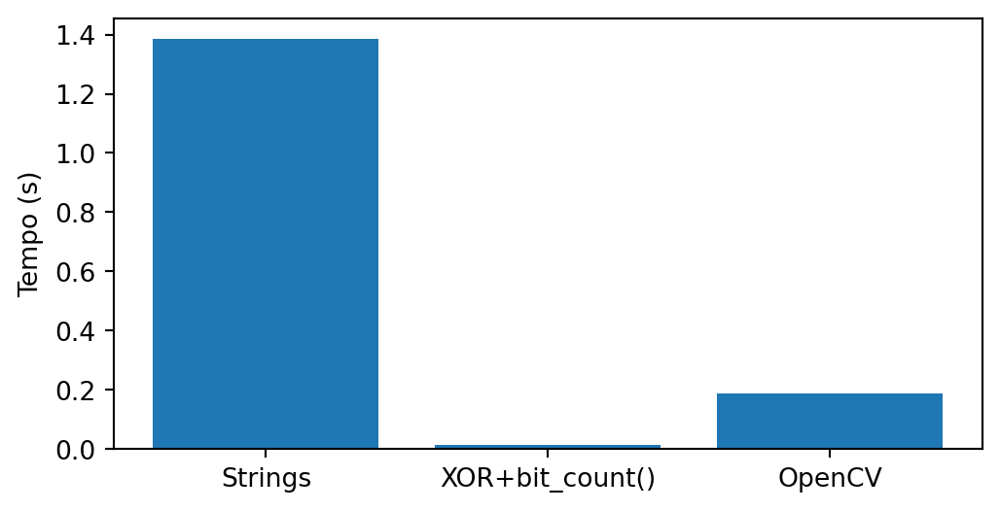
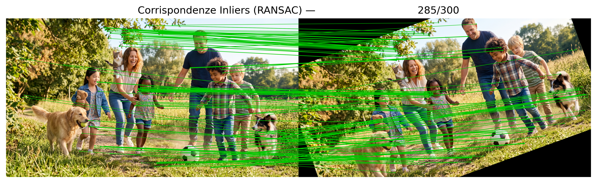
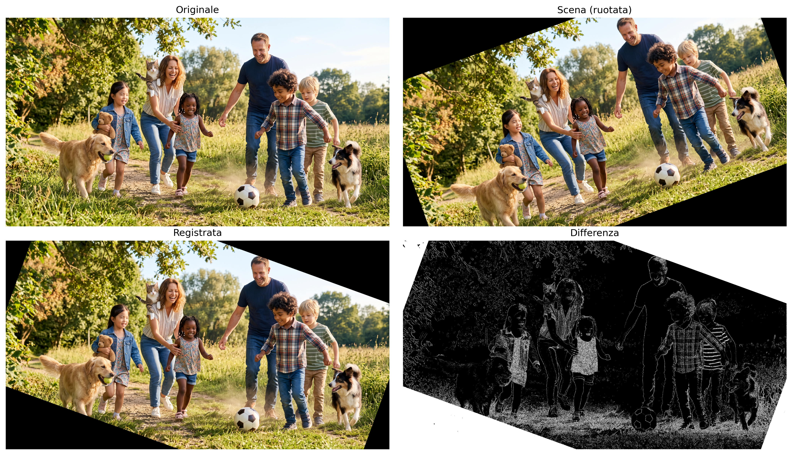
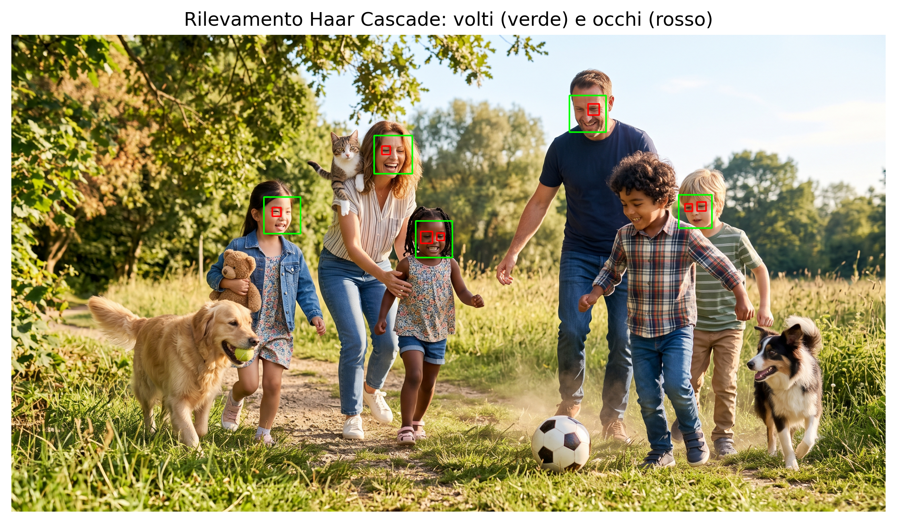
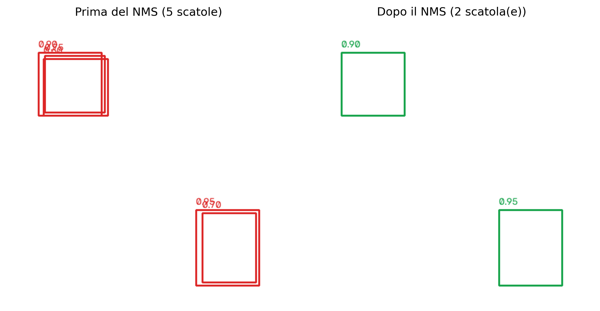
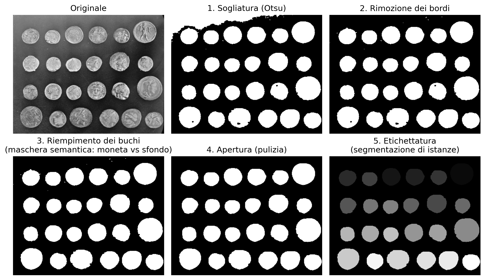

8Comprendere le Scene: Correspondenza delle Caratteristiche, Rilevamento e Segmentazione
Nel Capitolo 7 è stato studiato come rappresentare le immagini mediante descrittori e utilizzare tali rappresentazioni per compiti di classificazione. In questo capitolo, il problema viene ampliato: oltre a riconoscere pattern, diventa necessario stabilire corrispondenze tra diverse immagini, localizzare automaticamente oggetti di interesse e interpretare l’organizzazione spaziale di una scena.
Questi problemi costituiscono alcuni dei principali compiti della Visione Artificiale e rappresentano una fase naturale successiva alla classificazione delle immagini. Per risolverli, verranno presentati metodi classici di corrispondenza delle caratteristiche, rilevamento degli oggetti e segmentazione delle immagini, nonché una panoramica degli approcci moderni basati sul Deep Learning, preparando la transizione al Capitolo 9.
8.1 Obiettivi del Capitolo
Al termine di questo capitolo, lo studente dovrebbe essere in grado di:
Stabilire corrispondenze tra immagini utilizzando rilevatori e descrittori locali, stimando trasformazioni geometriche tramite omografie per la registrazione e la correzione prospettica;
Localizzare oggetti di interesse nelle immagini utilizzando metodi classici di rilevamento e valutare i risultati tramite metriche come la Intersection over Union (IoU) e la tecnica di Non-Maximum Suppression (NMS);
Distinguere i paradigmi di segmentazione — semantica, per istanze e panottica — comprendendo che la segmentazione panottica unifica la segmentazione semantica e quella per istanze, fornendo una descrizione più completa della scena, e applicare metodi classici di segmentazione;
Estrarre descrittori geometrici e topologici dagli oggetti segmentati ed esportarli come annotazioni strutturate (CSV o formato YOLO), validando la qualità delle annotazioni tramite la metrica IoU;
Mettere in relazione i metodi classici di corrispondenza, rilevamento e segmentazione con gli approcci moderni basati sul Deep Learning, studiati nel Capitolo 9.
La Figura 8.1 presenta una panoramica dei principali concetti e delle relazioni tra gli argomenti trattati in questo capitolo, fungendo da mappa concettuale per guidare la lettura.
Figura 8.1: Panoramica dei principali concetti trattati in questo capitolo, inclusi la corrispondenza delle caratteristiche, il rilevamento degli oggetti, la segmentazione delle immagini e le loro relazioni con gli approcci moderni basati sul Deep Learning. Fonte: elaborato con l’ausilio di Gemini Notebook ({GOOGLE}, 2025).
8.2 Configurazione dell’Ambiente
import os, urllib.requesturl ="https://raw.githubusercontent.com/fzampirolli/pdi-vc/master/morph/config.py"ifnot os.path.exists("config.py"): urllib.request.urlretrieve(url, "config.py")import configconfig.setup(testsuite=True)from morph import mmfrom testsuite import TestSuiteimport importlibimport subprocessimport sysdef setup_cap08():"""Installa le librerie mancanti necessarie per questo capitolo.""" pacotes = {"cv2": "opencv-python","skimage": "scikit-image","numpy": "numpy","sklearn": "scikit-learn","matplotlib": "matplotlib", }for mod, pkg in pacotes.items():if importlib.util.find_spec(mod) isNone: resultado = subprocess.run( [sys.executable, "-m", "pip", "install", "-q", pkg] )if resultado.returncode !=0:print(f"[AVVISO] Impossibile installare {pkg} (necessaria per il modulo {mod}).")setup_cap08()import cv2import numpy as npimport matplotlib.pyplot as pltimport matplotlib.patches as patchesfrom skimage import data as skdatafrom skimage.filters import threshold_otsufrom skimage.measure import labelfrom skimage.morphology import remove_small_objects, opening, disk
8.3 Rilevatori e Descrittori Locali di Caratteristiche
Nel capitolo precedente, ogni immagine è stata rappresentata da un singolo vettore di caratteristiche utilizzato per la classificazione. In molte applicazioni, tuttavia, è necessario confrontare solo parti dell’immagine, stabilendo corrispondenze tra regioni osservate in istanti, posizioni o punti di vista diversi. Questo compito richiede una rappresentazione locale dell’immagine, in grado di identificare strutture sufficientemente distintive da essere ritrovate in altre immagini.
Questo processo viene realizzato in due fasi complementari. Inizialmente, un rilevatore identifica punti di interesse (keypoints), generalmente associati a angoli o regioni con variazioni significative di intensità. Successivamente, un descrittore rappresenta numericamente il vicinato di ciascun punto rilevato, consentendo di confrontare regioni corrispondenti tra diverse immagini.
Una volta ottenute le coppie (punto, descrittore), la corrispondenza (matching) consiste nel trovare, per ogni descrittore di un’immagine, il descrittore più simile nell’altra. Queste corrispondenze costituiscono la base di numerose applicazioni, come la registrazione di immagini, la ricostruzione tridimensionale, la navigazione visiva e la realtà aumentata.
8.3.1 L’Algoritmo ORB (Oriented FAST and Rotated BRIEF)
In questo capitolo verrà utilizzato l’ORB, un rilevatore e descrittore locale che combina efficienza computazionale e robustezza alle rotazioni. L’algoritmo riunisce tre componenti principali:
FAST (Features from Accelerated Segment Test), responsabile della rilevazione dei punti chiave;
BRIEF (Binary Robust Independent Elementary Features), responsabile della costruzione del descrittore binario;
un meccanismo di stima dell’orientamento del vicinato, che rende il descrittore approssimativamente invariante alla rotazione.
Il rilevatore FAST scorre tutti i pixel dell’immagine. Per ogni pixel candidato, analizza un cerchio di 16 pixel attorno ad esso. Se un insieme di pixel consecutivi presenta un’intensità significativamente maggiore o minore rispetto all’intensità del pixel centrale, quel pixel viene considerato un punto chiave (keypoint). Successivamente, i candidati troppo vicini vengono filtrati, conservando solo i più rappresentativi.
Dopo la rilevazione dei punti chiave, il descrittore BRIEF viene calcolato in un vicinato attorno a ciascun punto chiave, e non solo sui 16 pixel utilizzati dal FAST. In questa regione, un modello di campionamento, formato da un insieme fisso di coppie di punti \((x,y)\) distribuiti in una finestra attorno al punto chiave, viene utilizzato per effettuare confronti di intensità secondo la Equazione 8.1. Nell’ORB, l’orientamento predominante del vicinato viene stimato a partire dalla distribuzione delle intensità in quella regione, e il modello di campionamento viene ruotato in base a tale orientamento. Inoltre, l’ORB utilizza una versione ottimizzata del BRIEF, denominata rBRIEF (Rotated BRIEF), nella quale le coppie di punti vengono selezionate per produrre descrittori più discriminatori e con bassa correlazione tra i loro bit.
\(x\) e \(y\) sono due punti del vicinato di \(p\), scelti dal modello di campionamento del BRIEF;
\(I(\cdot)\) rappresenta l’intensità di un pixel;
\(\tau(p;x,y)\) è il risultato del confronto binario tra i punti \(x\) e \(y\).
Ogni confronto genera un bit del descrittore. La concatenazione di tutti questi confronti forma il descrittore binario associato al punto chiave.
Poiché il descrittore è binario, la similarità tra due punti viene misurata mediante la distanza di Hamming, corrispondente al numero di bit differenti tra due descrittori. Questa metrica può essere calcolata in modo molto efficiente tramite operazioni logiche sui bit, rendendo l’ORB adatto ad applicazioni in tempo reale.
8.3.2 Esplorando il Simulatore dell’ORB
La Figura 8.3 illustra, in modo interattivo, come viene costruito il descrittore ORB. Ogni segmento rappresenta una delle 32 coppie di punti\((x,y)\) utilizzate nella Equazione 8.1. Il colore del segmento indica il risultato del confronto delle intensità: verde quando \(I(x)<I(y)\) (bit pari a 1) e rosso in caso contrario (bit pari a 0). La freccia gialla rappresenta l’orientamento predominante del vicinato, stimato a partire dal centroide di intensità. Il pattern di campionamento del BRIEF viene ruotato in base a questo orientamento, rendendo il descrittore approssimativamente invariante alla rotazione.
Inizialmente, imposta il rumore a zero e confronta la sequenza di bit con lo slider a 0° e poi a 15° (annotando il valore del campo “Firma del Descrittore Binario” in ciascun caso):
In questo esempio, entrambi i descrittori sono identici, e il pannello “Dist. di Hamming” conferma una distanza pari a zero — evidenza che la stima dell’orientamento sta compensando correttamente la rotazione dell’immagine.
Ora clicca su “Aggiungi Rumore” e ripeti l’esperimento. Poiché il rumore viene generato casualmente a ogni esecuzione, i valori seguenti sono solo un esempio — i tuoi saranno diversi, ma dovrebbero presentare una distanza di Hamming di magnitudo simile (tipicamente tra 6 e 14 bit, su un totale di 32):
Il rumore altera parte dei confronti di intensità, modificando alcuni bit del descrittore. La differenza tra due descrittori viene misurata dalla distanza di Hamming, corrispondente al numero di posizioni in cui i bit differiscono. Per i descrittori sopra riportati, tale distanza è pari a 10.
Un modo efficiente per calcolare questa distanza in Python consiste nell’applicare l’operazione XOR (^), che identifica i bit differenti, seguita dal metodo bit_count(), che conta quanti bit pari a 1 sono presenti nel risultato.
def hamming(a: int, b: int) ->int:return (a ^ b).bit_count()a =0b01000000001000110110011111101010b =0b10110000001011100100111111100010hamming(a, b)
10
La Figura 8.2 confronta questa implementazione con una versione basata sul confronto dei caratteri e con l’implementazione ottimizzata di OpenCV (cv2.NORM_HAMMING).
import random, timeit, cv2, numpy as np, pandas as pdimport matplotlib.pyplot as pltBITS, N =256, 100_000A = [''.join(random.choice('01') for _ inrange(BITS)) for _ inrange(N)]B = [''.join(random.choice('01') for _ inrange(BITS)) for _ inrange(N)]Ai, Bi =map(lambda L: [int(x,2) for x in L], (A,B))Acv = np.array([[int(s[i:i+8],2) for i inrange(0,BITS,8)] for s in A], np.uint8)Bcv = np.array([[int(s[i:i+8],2) for i inrange(0,BITS,8)] for s in B], np.uint8)H = [ ("Strings", lambda: sum(sum(x!=y for x,y inzip(a,b)) for a,b inzip(A,B))), ("XOR+bit_count()", lambda: sum((a^b).bit_count() for a,b inzip(Ai,Bi))), ("OpenCV", lambda: sum(cv2.norm(a,b,cv2.NORM_HAMMING) for a,b inzip(Acv,Bcv)))]df = pd.DataFrame( [(n, timeit.timeit(f, number=1)) for n,f in H], columns=["Método","Tempo (s)"])df["Speedup"] = (df.iloc[0,1]/df["Tempo (s)"]).round(1)print(df)plt.figure(figsize=(6,3))plt.bar(df["Método"], df["Tempo (s)"])plt.ylabel("Tempo (s)")plt.show()
Método Tempo (s) Speedup
0 Strings 1.386563 1.0
1 XOR+bit_count() 0.012914 107.4
2 OpenCV 0.187033 7.4

Figura 8.2: Confronto delle prestazioni di diverse implementazioni della distanza di Hamming.
🎯 Simulatore: Allineamento dell'Orientamento e BRIEF (ORB)Invarianza dell'Orientamento in Tempo Reale
Angolo (θ)
0°
Dist. Hamming
0
Coppie Attive
32
Firma del Descrittore Binario Generata (BRIEF 32-bit):
00000000000000000000000000000000
Test = 1 (I(A) < I(B))
Test = 0 (I(A) ≥ I(B))
La vettorizzazione in giallo indica il vettore centroide dell'orientamento stimato.
Figura 8.3: Simulatore interattivo del descrittore ORB: esplora la logica di rotazione e costruzione del descrittore binario. Modifica la rotazione per osservare come il pattern di campionamento dei test binari del BRIEF (linee verdi e rosse) si orienta dinamicamente per garantire l’invarianza angolare.
8.4 Corrispondenza delle Caratteristiche e Omografia con ORB
Per illustrare il processo di corrispondenza delle caratteristiche, si utilizza una scena sintetica ottenuta dalla rotazione di 20° dell’immagine originale. Questa trasformazione simula una seconda acquisizione della stessa scena da un altro punto di vista. La Figura 8.4 presenta l’immagine di riferimento e la sua versione ruotata, che saranno utilizzate nelle fasi successive.
Figura 8.4: Imagem original gerada pelo Gemini e versão rotacionada (20°), simulando uma mudança de ponto de vista.
8.4.1 Rilevamento e Corrispondenza delle Caratteristiche con ORB
Con le due immagini disponibili, ORB rileva i punti chiave e calcola i loro descrittori binari. Successivamente, il BFMatcher della libreria cv2 stabilisce le corrispondenze tra i descrittori utilizzando la distanza di Hamming e la verifica incrociata (cross-check). Infine, le corrispondenze vengono ordinate dalla distanza di Hamming minore a quella maggiore, dando priorità alle coppie potenzialmente più affidabili. Nel codice seguente, che genera la Figura 8.5, si evidenziano i seguenti passaggi:
cv2.ORB_create(nfeatures=500) istanzia il rilevatore ORB, limitando la ricerca ai 500 punti chiave più rappresentativi di ciascuna immagine. Questa restrizione riduce il costo computazionale ed evita la selezione di punti poco distintivi.
orb.detectAndCompute(...) esegue, in un’unica chiamata, il rilevamento dei punti chiave tramite FAST e il calcolo dei descrittori tramite BRIEF orientato, restituendo l’elenco dei punti chiave (kp) e i loro descrittori binari a 256 bit (des).
cv2.BFMatcher(cv2.NORM_HAMMING, crossCheck=True) crea un comparatore a forza bruta (Brute-Force Matcher), che utilizza la distanza di Hamming — la stessa metrica esplorata nella Figura 8.3 — per confrontare ciascun descrittore dell’immagine originale con tutti i descrittori dell’immagine ruotata. Il parametro crossCheck=True conserva solo le coppie in cui la migliore corrispondenza è reciproca, cioè quando il miglior corrispondente di A è B e, simultaneamente, il miglior corrispondente di B è A. Questo criterio elimina gran parte delle corrispondenze ambigue.
matches = sorted(...) ordina le corrispondenze dalla distanza di Hamming minore a quella maggiore. Minore è questa distanza, maggiore è la similarità tra i descrittori e, di conseguenza, maggiore è la probabilità che la corrispondenza sia corretta.
La Figura 8.5 presenta solo le cinque corrispondenze con la distanza di Hamming minore. Sebbene queste coppie siano le più promettenti, non esiste ancora alcuna restrizione geometrica tra i punti corrispondenti. Di conseguenza, alcune connessioni possono rappresentare false corrispondenze (false matches), giustificando l’uso del RANSAC nella fase successiva per identificare solo le corrispondenze geometricamente coerenti.
orb = cv2.ORB_create(nfeatures=500)kp1, des1 = orb.detectAndCompute(img_original, None)kp2, des2 = orb.detectAndCompute(img_cena, None)print(f"Punti di interesse rilevati: {len(kp1)} (originale), {len(kp2)} (scena)")bf = cv2.BFMatcher(cv2.NORM_HAMMING, crossCheck=True)matches =sorted( bf.match(des1, des2), key=lambda m: m.distance)print(f"Corrispondenze trovate: {len(matches)}")def draw_matches_destacado(img1, kp1, img2, kp2, matches, espessura=2, raio_ponto=4, seed=42, cor_fixa=None):"""Disegna le immagini affiancate con linee che collegano i punti corrispondenti. Se cor_fixa=None, ogni corrispondenza riceve un colore casuale (facilita distinguere collegamenti individuali). Se cor_fixa è definita (es: verde), tutte le linee usano lo stesso colore — utile per evidenziare un sottoinsieme specifico, come gli inlier del RANSAC. """ h1, w1 = img1.shape[:2] h2, w2 = img2.shape[:2] h =max(h1, h2) canvas = np.zeros((h, w1 + w2, 3), dtype=np.uint8) canvas[:h1, :w1] = cv2.cvtColor(img1, cv2.COLOR_GRAY2BGR) if img1.ndim ==2else img1 canvas[:h2, w1:w1+w2] = cv2.cvtColor(img2, cv2.COLOR_GRAY2BGR) if img2.ndim ==2else img2 rng = np.random.RandomState(seed) # seed fissa = colori riproducibili a ogni esecuzionefor m in matches: pt1 =tuple(np.round(kp1[m.queryIdx].pt).astype(int)) pt2 =tuple(np.round(kp2[m.trainIdx].pt).astype(int) + np.array([w1, 0])) cor = cor_fixa if cor_fixa isnotNoneelse\tuple(int(c) for c in rng.randint(60, 256, size=3)) cv2.line(canvas, pt1, pt2, cor, espessura, lineType=cv2.LINE_AA) cv2.circle(canvas, pt1, raio_ponto, cor, -1, lineType=cv2.LINE_AA) cv2.circle(canvas, pt2, raio_ponto, cor, -1, lineType=cv2.LINE_AA)return canvas# prova le 5 peggiori: matches[-5:]img_matches = draw_matches_destacado( img_original, kp1, img_cena, kp2, matches[:5], espessura=10, raio_ponto=15)mm.show([img_matches], titles=["Top 5 Corrispondenze ORB"], cols=1, figsize=(10, 5))
Punti di interesse rilevati: 500 (originale), 500 (scena)
Corrispondenze trovate: 300
Figura 8.5: Le 5 migliori corrispondenze delle caratteristiche ORB tra l’immagine originale e la scena sintetica, prima del filtraggio con RANSAC.
La funzione draw_matches_destacado() ha esclusivamente finalità di visualizzazione: posiziona le immagini fianco a fianco e disegna linee tra le coppie corrispondenti, senza interferire nella stima delle corrispondenze.
8.5 Modellazione Matematica: Omografia e RANSAC
8.5.1 Omografia
Negli Esercizi 10 e 11 del Capitolo 2, le funzioni cv2.getPerspectiveTransform e cv2.warpPerspective sono state utilizzate per correggere la prospettiva delle immagini a partire da quattro coppie di punti corrispondenti forniti manualmente. In questo capitolo, tali corrispondenze vengono ottenute automaticamente tramite ORB, rendendo possibile stimare la trasformazione tra due immagini senza intervento dell’utente.
Matematicamente, questa trasformazione è descritta da un’omografia, rappresentata da una matrice \(3\times3\) che mette in relazione le coordinate di uno stesso piano osservato da diversi punti di vista:
Dopo la normalizzazione delle coordinate omogenee, si ottiene il punto corrispondente
\[
\left(\frac{x'}{w'},\frac{y'}{w'}\right).
\]
Poiché l’omografia è definita a meno di un fattore di scala, essa possiede otto gradi di libertà. Di conseguenza, sono necessarie almeno quattro coppie di punti corrispondenti per stimarne i parametri.
Nella pratica, tuttavia, le corrispondenze generate automaticamente da ORB possono contenere associazioni errate (outlier). Per stimare l’omografia in modo affidabile anche in presenza di questi errori, si utilizza l’algoritmo RANSAC, presentato nella sezione successiva.
8.5.2 RANSAC
Il RANSAC (Random Sample Consensus) è un algoritmo di stima robusta in grado di adattare un modello geometrico anche in presenza di osservazioni errate (outlier). In questo capitolo, il modello di interesse è una omografia, stimata a partire dalle corrispondenze prodotte dall’ORB.
In ogni iterazione, l’algoritmo:
seleziona casualmente un piccolo sottoinsieme di corrispondenze (quattro coppie di punti, nel caso dell’omografia);
stima un’omografia candidata a partire da tale sottoinsieme;
verifica quali corrispondenze sono compatibili con questa trasformazione, classificandole come inlier o outlier;
registra l’omografia che produce il maggior numero di inlier;
ristima l’omografia utilizzando solo gli inlier trovati.
Sebbene l’esempio di questo capitolo utilizzi un’omografia, il RANSAC è un algoritmo di scopo generale e può essere impiegato per stimare diversi modelli geometrici, come rette, circonferenze, piani e altre trasformazioni. In tutti i casi, il principio è lo stesso: generare modelli candidati a partire da piccoli campioni casuali e selezionare quello che presenta il maggiore consenso tra i dati.
Per comprendere questo processo in modo graduale, vengono presentati due simulatori.
Il primo, mostrato nella Figura 8.6, utilizza l’esempio più semplice possibile: l’adattamento di una retta a un insieme di punti contenente circa il 25% di outlier. L’obiettivo è comprendere le fasi fondamentali dell’algoritmo — campionare, stimare un modello, identificare gli inlier e ripetere il processo — senza la complessità della registrazione tra immagini.
🎯 Simulatore: RANSAC — Adattamento Robusto di una Retta a OutlierDati con ~25% di corrispondenze spurie
Soglia (px)
15
Inlier
–
Outlier
–
Iterazioni
–
Punti (non classificati)
Inlier
Outlier
Figura 8.6: Simulatore interattivo dell’algoritmo RANSAC: regola la soglia di distanza ed esegui l’algoritmo per osservare la separazione tra inliers e outliers.
Il secondo simulatore, presentato nella Figura 8.7, si avvicina al problema studiato in questo capitolo. Invece di un unico insieme di punti, vengono considerate due immagini contenenti corrispondenze tra punti chiave. Alcune corrispondenze sono corrette (inliers), mentre altre sono errate (outliers), risultanti da errori nel processo di corrispondenza dei descrittori. In questo simulatore, il modello stimato è una trasformazione di similarità (rotazione, scala e traslazione), più semplice rispetto a un’omografia completa, ma sufficiente per illustrare il problema della registrazione tra immagini.
In entrambi i simulatori, l’algoritmo eseguito segue esattamente lo stesso principio utilizzato successivamente per stimare l’omografia. L’unica differenza risiede nel modello geometrico adattato.
Regola la soglia di distanza ed esegui l’algoritmo in ciascun simulatore per osservare come il RANSAC identifichi gli inliers, scarti gli outliers e stimi un modello coerente utilizzando solo le corrispondenze valide.
🧩 Simulatore: RANSAC — Registro per Corrispondenza di Punti~30% di corrispondenze spurie (falsi match)
Soglia (px)
12
Inlier
–
Outlier
–
Iterazioni
–
Punti chiave
Non classificato
Inlier
Outlier
Figura 8.7: Simulatore interattivo del RANSAC applicato alla registrazione di immagini: i punti chiave di due immagini vengono accoppiati tramite un descrittore, alcune corrispondenze sono spurie (outlier), e il RANSAC stima la trasformazione di similarità che allinea la maggior parte di esse.
8.5.3 Stima dell’Omografia con RANSAC
Dopo aver ottenuto le corrispondenze tra i punti chiave tramite ORB, il passo successivo consiste nello stimare l’omografia tra le due immagini. A tal fine, si utilizza la funzione cv2.findHomography(), che impiega l’algoritmo RANSAC per calcolare questa trasformazione e restituire una maschera che indica quali corrispondenze sono state classificate come inliers.
Il codice seguente esegue quattro operazioni principali:
estrae le coordinate dei punti corrispondenti in ciascuna immagine;
stima l’omografia tramite cv2.findHomography(..., cv2.RANSAC);
riceve la maschera prodotta dal RANSAC, nella quale ciascuna corrispondenza è classificata come inlier o outlier;
utilizza tale maschera per selezionare solo le corrispondenze classificate come inliers.
La Figura 8.8 presenta solo le corrispondenze classificate come inliers. Si osserva che queste coppie di punti sono compatibili con una stessa trasformazione geometrica, mentre le corrispondenze inconsistenti (outliers) vengono scartate. Di conseguenza, l’omografia stimata rappresenta in modo più fedele la relazione geometrica tra le due immagini.
pts1 = np.float32([kp1[m.queryIdx].pt for m in matches])pts2 = np.float32([kp2[m.trainIdx].pt for m in matches])H, mascara_inliers = cv2.findHomography(pts1, pts2, cv2.RANSAC, ransacReprojThreshold=5.0)n_inliers =int(mascara_inliers.sum())print(f"Matrice di omografia stimata:\n{H}\n")print(f"Inliers: {n_inliers} di {len(matches)} corrispondenze \ ({100*n_inliers/len(matches):.1f}%)")matches_inliers = [m for m, ok inzip(matches, mascara_inliers.ravel()) if ok]img_inliers = draw_matches_destacado( img_original, kp1, img_cena, kp2, matches_inliers, espessura=2, raio_ponto=4, cor_fixa=(0, 200, 0) # verde (BGR))mm.show([img_inliers], titles=[f"Corrispondenze Inliers (RANSAC) — \{n_inliers}/{len(matches)}"], cols=1, figsize=(10, 5))
Matrice di omografia stimata:
[[ 9.39407240e-01 3.41706397e-01 -1.77390658e+02]
[-3.41929137e-01 9.39717641e-01 5.27534018e+02]
[-1.12175998e-07 -4.86089683e-08 1.00000000e+00]]
Inliers: 285 di 300 corrispondenze (95.0%)

Figura 8.8: Corrispondenze classificate come inliers (verde) dal RANSAC stimando l’omografia tra le due immagini.
8.5.4 Registrazione dell’Immagine
Dopo aver stimato l’omografia, il passo successivo consiste nell’utilizzarla per registrare l’immagine della scena nel sistema di coordinate dell’immagine originale. Questo processo consente di allineare le due immagini, facilitando il confronto tra di esse.
Il codice esegue tre operazioni principali:
applica la trasformazione proiettiva tramite cv2.warpPerspective(), utilizzando l’opzione cv2.WARP_INVERSE_MAP, che applica internamente la trasformazione inversa senza la necessità di calcolare esplicitamente \(H^{-1}\);
calcola la differenza assoluta pixel per pixel tra l’immagine registrata e l’immagine originale tramite cv2.absdiff();
visualizza l’immagine originale, la scena ruotata, l’immagine registrata e una mappa delle differenze tra le due immagini.
La Figura 8.9 presenta il risultato della registrazione. Si osserva che l’immagine registrata diventa visivamente molto simile all’immagine originale, indicando che l’omografia stimata è riuscita ad allineare correttamente le due viste della stessa scena. La mappa delle differenze evidenzia solo le regioni in cui permangono piccole discrepanze derivanti da errori di interpolazione, quantizzazione e dalla stessa stima dell’omografia.
h, w = img_original.shape[:2]# WARP_INVERSE_MAP: applica H "all'indietro", evitando il calcolo manuale di H^-1img_registrada = cv2.warpPerspective(img_cena, H, (w, h), flags=cv2.WARP_INVERSE_MAP)erro = cv2.absdiff(img_original, img_registrada)mm.show( # mostra mm.gray(erro)>10 in toni di grigio [img_original, img_cena, img_registrada, mm.gray(erro)>10], titles=["Originale", "Scena (ruotata)", "Registrata", "Differenza"], cols=2, figsize=(14, 8),)

Figura 8.9: Registrazione dell’immagine della scena usando l’omografia inversa stimata da RANSAC.
Nota🧠 Perché funziona? — Robustezza per consenso
Molti metodi di stima adattano un modello utilizzando tutte le osservazioni disponibili, cercando di minimizzare l’errore totale tra i dati osservati e il modello adattato (approccio noto come minimi quadrati). Quando esistono outlier, queste osservazioni errate possono spostare significativamente il risultato ottenuto.
Il RANSAC segue una strategia diversa. Invece di utilizzare tutti i dati simultaneamente, stima modelli successivi a partire da piccoli campioni casuali. Ogni modello viene poi valutato in base al numero di corrispondenze compatibili con esso. Al termine delle iterazioni, viene selezionato il modello che presenta il maggiore consenso tra i dati, cioè il maggior numero di inlier.
Due parametri svolgono un ruolo fondamentale nell’algoritmo:
la soglia di riproiezione, che definisce la distanza massima affinché una corrispondenza sia classificata come inlier;
il numero di iterazioni, che deve essere sufficientemente grande per aumentare la probabilità di selezionare almeno un campione privo di outlier.
Sebbene piuttosto robusto, il RANSAC presuppone che nei dati esista un modello geometrico predominante. Le sue prestazioni tendono a diminuire quando la proporzione di inlier è molto piccola o quando diverse strutture geometriche coesistono nella stessa scena, rendendo difficile l’identificazione di un unico modello dominante.
8.6 Rilevamento di Oggetti: Haar Cascade (Viola-Jones)
La corrispondenza delle caratteristiche risponde alla domanda: “dove si trova lo stesso oggetto o pattern osservato in precedenza?”. Il rilevamento di oggetti risolve un problema più generale: localizzare automaticamente istanze di una categoria (ad esempio, volti umani), anche se gli oggetti specifici non sono mai stati osservati durante l’addestramento. Mentre ORB richiede due immagini per stabilire corrispondenze tra punti, l’Haar Cascade opera su una singola immagine, identificando direttamente le regioni candidate a contenere l’oggetto cercato.
L’algoritmo Haar Cascade, proposto da Viola e Jones [Viola; Jones (2001); Viola (2004)], combina caratteristiche Haar, immagini integrali e una cascata di classificatori per realizzare il rilevamento di oggetti in modo efficiente. Sebbene attualmente esistano metodi più recenti basati su reti neurali convoluzionali, l’Haar Cascade rimane disponibile nella libreria OpenCV e costituisce un esempio classico per lo studio delle tecniche di rilevamento di oggetti.
Il suo funzionamento si basa su tre componenti principali:
Caratteristiche Haar: filtri rettangolari semplici che misurano differenze di intensità tra regioni vicine dell’immagine, sfruttando pattern di contrasto caratteristici dell’oggetto, come la regione degli occhi generalmente più scura della fronte;
Immagine integrale: struttura dati che consente di calcolare rapidamente la somma dei pixel di qualsiasi regione rettangolare dell’immagine: \[
I_{\text{integrale}}(x,y)=\sum_{x'\le x,\;y'\le y}I(x',y'),
\] riducendo significativamente il costo computazionale della valutazione delle caratteristiche Haar. Con questa struttura, la somma dei pixel di qualsiasi rettangolo può essere ottenuta con soli quattro accessi all’immagine integrale;
Cascata di classificatori: durante l’addestramento, l’algoritmo AdaBoost seleziona e combina classificatori semplici in una sequenza di stadi. Nel rilevamento, le regioni che chiaramente non corrispondono all’oggetto vengono scartate già nei primi stadi, mentre solo le candidate più promettenti superano le fasi successive, più precise e computazionalmente più costose. Questa strategia consente di effettuare una ricerca efficiente in diverse posizioni e scale dell’immagine.
Il codice seguente, che genera la Figura 8.10, utilizza classificatori pre-addestrati e messi a disposizione da OpenCV per rilevare volti e, successivamente, restringe la ricerca degli occhi solo all’interno di ciascun volto rilevato. Questa strategia riduce i falsi positivi e diminuisce il costo computazionale, poiché evita di effettuare la ricerca degli occhi su tutta l’immagine.
Durante il rilevamento, una finestra scorre l’immagine in diverse posizioni e scale. La funzione detectMultiScale() esegue automaticamente questa ricerca. Il parametro scaleFactor controlla il fattore di riduzione tra scale consecutive della finestra, mentre minNeighbors definisce il numero minimo di rilevamenti vicini necessari per confermare un oggetto, riducendo i rilevamenti spuri. Il parametro minSize stabilisce la dimensione minima dell’oggetto considerata durante la ricerca.
La funzione restituisce un elenco di rettangoli, ciascuno descritto dalle coordinate dell’angolo superiore sinistro e dalle dimensioni (x, y, larghezza, altezza). Questi rettangoli delimitano le regioni classificate come oggetti dal rilevatore e vengono utilizzati per disegnare le scatole mostrate nella Figura 8.10..
def get_cascade(nome):"""Scarica (se necessario) e carica un classificatore Haar Cascade di OpenCV.""" caminho =f"haarcascades/{nome}" os.makedirs("haarcascades", exist_ok=True)ifnot os.path.exists(caminho): url =f"https://raw.githubusercontent.com/opencv/opencv/master/data/haarcascades/{nome}" urllib.request.urlretrieve(url, caminho)return cv2.CascadeClassifier(caminho)# Più utilizzato#face_cascade = get_cascade("haarcascade_frontalface_default.xml")# Più preciso, ma più lentoface_cascade = get_cascade("haarcascade_frontalface_alt2.xml")# Compromesso tra velocità e precisione#face_cascade = get_cascade("haarcascade_frontalface_alt.xml")# Molto veloce, ma meno preciso#face_cascade = get_cascade("haarcascade_frontalface_alt_tree.xml")# per gli occhi, più utilizzato#eye_cascade = get_cascade("haarcascade_eye.xml")eye_cascade = get_cascade("haarcascade_eye_tree_eyeglasses.xml")img_original = mm.read(caminho_local)# Scala di grigi + equalizzazione dell'istogramma (Capitolo 3), come Haar Cascade si aspettaimg_rgb = mm.rotate(img_original, angle=0)img_gray = cv2.equalizeHist(cv2.cvtColor(img_rgb, cv2.COLOR_RGB2GRAY))# Rileva i volti e, all'interno di ciascuno, prova a rilevare gli occhifaces = face_cascade.detectMultiScale( img_gray, scaleFactor=1.1, # Passi più ampi tra le scale: più veloce, ma meno sensibile minNeighbors=3, # N. minimo di rilevazioni sovrapposte per confermare un volto minSize=(90, 90) # Ignora regioni candidate più piccole di 30×30 px)img_anotada = img_rgb.copy()for (x, y, w, h) in faces: cv2.rectangle(img_anotada, (x, y), (x + w, y + h), (0, 255, 0), 3) olhos = eye_cascade.detectMultiScale( img_gray[y:y+h, x:x+w], scaleFactor=1.02, minNeighbors=4, minSize=(15, 15) )for (ex, ey, ew, eh) in olhos: cv2.rectangle(img_anotada, (x+ex, y+ey), (x+ex+ew, y+ey+eh), (255, 0, 0), 4)print(f"Regioni rilevate come volto: {len(faces)}")mm.show([img_anotada], titles= ["Rilevamento Haar Cascade: volti (verde) e occhi (rosso)"], cols=1, figsize=(8, 8))
Regioni rilevate come volto: 5

Figura 8.10: Rilevamento di volti e occhi con Haar Cascade.
Nota🧠 Perché funziona? — E perché anche fallisce
Nell’immagine utilizzata in questo esempio, il classificatore rileva il viso e gli occhi, ma può anche marcare una seconda regione su parte dello sfondo dell’immagine come se fosse un viso. Questo è un esempio di falso positivo: la distribuzione locale delle intensità in quella regione è sufficientemente simile ai modelli appresi durante l’addestramento affinché la cascata la classifichi erroneamente come un volto.
Questo comportamento evidenzia uno dei principali limiti dell’Haar Cascade. Poiché il metodo basa la sua decisione solo su caratteristiche di Haar, cioè differenze di intensità tra regioni rettangolari, non rappresenta esplicitamente la forma o il significato degli oggetti presenti nell’immagine. Pertanto, texture e pattern di contrasto simili a quelli riscontrati nei volti possono produrre rilevamenti errati. Inoltre, le sue prestazioni tendono a diminuire in presenza di grandi variazioni di posa, occlusioni, espressioni facciali e condizioni di illuminazione diverse da quelle presenti nei dati utilizzati per l’addestramento.
Nonostante questi limiti, l’Haar Cascade rimane utile in applicazioni che privilegiano un basso costo computazionale. In situazioni che richiedono una maggiore capacità di generalizzazione rispetto alle variazioni nell’aspetto degli oggetti, i metodi moderni basati su reti neurali profonde tendono a offrire prestazioni migliori.
8.7 Rilevamento di Oggetti: Bounding Box, IoU e NMS
Sebbene i metodi di rilevamento di oggetti utilizzino strategie piuttosto diverse — dal Haar Cascade ai rilevatori moderni basati su reti neurali profonde —, i loro risultati sono normalmente rappresentati da bounding box (caixas delimitadoras), definite dalle coordinate \((x_{min}, y_{min}, x_{max}, y_{max})\).
8.7.1Intersection over Union (IoU)
La metrica Intersection over Union (IoU) quantifica la sovrapposizione tra due bounding box, ad esempio, il rilevamento prodotto da un algoritmo e l’annotazione di riferimento (ground truth):
Più il valore è vicino a 1, maggiore è la concordanza tra le box; il valore 0 indica assenza di sovrapposizione. Nelle valutazioni dei rilevatori di oggetti, è comune considerare un rilevamento corretto quando \(\mathrm{IoU}\ge0{,}5\), sebbene applicazioni specifiche possano adottare soglie diverse.
La metrica IoU non è utilizzata solo per valutare i rilevatori. Essa costituisce anche il criterio impiegato dall’algoritmo di Soppressione Non-Massima per decidere quando due bounding box rappresentano lo stesso oggetto e, pertanto, una di esse deve essere eliminata.
8.7.2 Soppressione Non-Massima (NMS)
Durante il rilevamento, è comune che diverse bounding box siano associate allo stesso oggetto. La Soppressione Non-Massima (Non-Maximum Suppression, NMS) elimina questa ridondanza in tre fasi:
ordina i rilevamenti in base al punteggio di confidenza, dal maggiore al minore;
mantiene la box con maggiore confidenza ed elimina quelle il cui IoU con essa supera una determinata soglia;
ripete il processo con le box rimanenti fino a quando non esistono sovrapposizioni rilevanti.
L’esempio della Figura 8.11 illustra questa procedura con due oggetti, ciascuno inizialmente rappresentato da diverse box sovrapposte. In questo esempio, ogni bounding box riceve un punteggio di confidenza, che rappresenta il grado di fiducia del rilevatore che quella regione contenga l’oggetto cercato.
Invece di implementare manualmente l’algoritmo, si utilizza la funzione cv2.dnn.NMSBoxes, che implementa la Soppressione Non-Massima impiegata in diversi rilevatori moderni. La funzione desenhar_caixas mostra, affiancate, le box prima e dopo l’NMS, evidenziando la riduzione da cinque rilevamenti a soli due, preservando solo la box con maggiore confidenza per ciascun oggetto.
def desenhar_caixas(caixas, pontuacoes, indices, cor, tamanho=(450, 450)):"""Disegna le scatole (e i loro punteggi) indicate in `indices` su uno sfondo bianco.""" tela = np.full((tamanho[1], tamanho[0], 3), 255, dtype=np.uint8)for i in indices: x0, y0, x1, y1 = caixas[i] cv2.rectangle(tela, (x0, y0), (x1, y1), cor, 2) cv2.putText(tela, f"{pontuacoes[i]:.2f}", (x0, y0 -8), cv2.FONT_HERSHEY_SIMPLEX, 0.5, cor, 1, cv2.LINE_AA)return telacaixas = np.array([ [50, 50, 150, 150], [60, 55, 155, 145], [58, 60, 160, 150], [300, 300, 400, 420], [310, 305, 395, 415],])pontuacoes = np.array([0.90, 0.75, 0.60, 0.95, 0.70])# cv2.dnn.NMSBoxes si aspetta scatole nel formato (x, y, larghezza, altezza)caixas_xywh = np.column_stack([ caixas[:, 0], caixas[:, 1], caixas[:, 2] - caixas[:, 0], caixas[:, 3] - caixas[:, 1]])mantidas = cv2.dnn.NMSBoxes( bboxes=caixas_xywh.tolist(), scores=pontuacoes.tolist(), score_threshold=0.0, # nessun taglio per confidenza minima qui nms_threshold=0.5# soglia IoU per considerare due scatole ridondanti).flatten()img_antes = desenhar_caixas(caixas, pontuacoes, range(len(caixas)), cor=(220, 38, 38))img_depois = desenhar_caixas(caixas, pontuacoes, mantidas, cor=(22, 163, 74))mm.show( [img_antes, img_depois], titles=[f"Prima del NMS ({len(caixas)} scatole)", \f"Dopo il NMS ({len(mantidas)} scatola(e))"], cols=2, figsize=(9, 4.5))

Figura 8.11: Effetto della Soppressione Non-Massimale (NMS): più rilevamenti ridondanti (a sinistra) vengono ridotti a un rilevamento per oggetto (a destra).
Nota🧠 Perché funziona? — Eliminazione delle ridondanze
La NMS (Non-Maximum Suppression) non altera la qualità delle rilevazioni prodotte dal rivelatore. La sua funzione è eliminare riquadri delimitatori ridondanti che rappresentano lo stesso oggetto, conservando solo quello con il punteggio di confidenza più elevato.
La sua efficacia dipende dalla soglia di IoU adottata. Un valore molto basso può eliminare riquadri corrispondenti a oggetti diversi la cui sovrapposizione sia elevata, mentre un valore molto alto può mantenere diversi riquadri sovrapposti per lo stesso oggetto.
La NMS inoltre non elimina i falsi positivi isolati. Se una regione errata viene rilevata da un solo riquadro, essa verrà conservata, poiché non esiste un’altra rilevazione ridondante con cui confrontarla. Per questo motivo, la NMS viene applicata come fase di post-elaborazione, utilizzando solo i riquadri delimitatori e i loro punteggi di confidenza prodotti dal rivelatore.
8.8 Segmentazione Visuale: Semantica, per Istanza e Panottica
Una bounding box indica approssimativamente la posizione di un oggetto, ma non identifica quali pixel gli appartengono. La segmentazione visuale risolve questo problema assegnando un’etichetta a ogni pixel dell’immagine. A seconda dell’informazione prodotta, si distinguono tre paradigmi principali, riassunti nella Tabella 8.1.
Tabella 8.1: Confronto tra i principali paradigmi di segmentazione visuale.
Paradigma
Domanda a cui risponde
Distingue oggetti della stessa classe?
Semantica
“A quale classe appartiene ogni pixel?”
No. Tutti i pixel di una stessa classe ricevono la stessa etichetta.
Per istanza
“Quali pixel appartengono a ogni singolo oggetto?”
Sì. Ogni oggetto riceve un identificatore proprio.
Panottica
Combina i due precedenti.
Sì. Ogni pixel riceve una classe e, quando applicabile, un identificatore di istanza.
Nella segmentazione semantica, ogni pixel riceve solo l’etichetta della propria classe. Nella segmentazione per istanza, oltre alla classe, oggetti distinti appartenenti alla stessa categoria vengono differenziati tra loro. La segmentazione panottica, invece, combina queste due informazioni, assegnando a ogni pixel una classe e, quando applicabile, un identificatore di istanza.
8.8.1 Segmentazione Semantica per Soglia
Prima della diffusione dei metodi basati su reti neurali profonde — tema del Capitolo 9 —, molte applicazioni di segmentazione erano risolte con tecniche classiche di elaborazione delle immagini. Uno degli esempi più semplici consiste nel separare oggetto e sfondo mediante soglia, producendo una maschera binaria. Tale maschera caratterizza una segmentazione semantica, poiché ogni pixel appartiene a una delle due classi: moneta o sfondo.
La Figura 8.12 utilizza l’immagine di monete della libreria scikit-image. Questo esempio riprende i concetti di soglia e morfologia matematica studiati nel Capitolo 4, in sostituzione dell’esempio precedente, che impiegava un’altra immagine di monete.
Inizialmente, si applica una chiusura morfologica per attenuare piccole imperfezioni sulla superficie delle monete. Successivamente, la soglia di Otsu produce la maschera binaria che separa monete e sfondo. Dopo la rimozione degli oggetti connessi al bordo dell’immagine, il riempimento delle regioni interne e l’eliminazione di piccoli rumori tramite operazioni morfologiche, si ottiene una maschera semantica adeguata per le fasi successive.
8.8.2 Segmentazione delle istanze mediante etichettatura
Una maschera semantica fornisce solo la classe di ciascun pixel, ma non distingue oggetti diversi appartenenti alla stessa categoria. Per ottenere una segmentazione delle istanze, si applica l’etichettatura delle componenti connesse, che assegna un identificatore diverso a ciascuna regione connessa della maschera binaria.
In questo esempio, ogni componente connessa corrisponde a una singola moneta. Pertanto, l’etichettatura produce una segmentazione delle istanze, consentendo di identificare, contare e misurare separatamente ciascuna moneta presente nell’immagine.
img_moedas = skdata.coins()# 1. Chiusura morfologica: smussa i bordi e riempie piccole imperfezioni sulla# superficie delle monete prima della sogliaturafechamento = mm.close(img_moedas, mm.sedisk(4))# 2. Sogliatura di Otsu (Capitolo 4): separa le monete (chiare) dallo sfondo (scuro)mascara_bruta = mm.threshold(fechamento)# 3. Rimuove gli oggetti collegati al bordo dell'immagine — le monete tagliate ai# bordi non formano istanze complete e ostacolerebbero il conteggiomascara_sem_borda = mm.edgeoff(mascara_bruta)# 4. Chiusura dei buchi: riempie eventuali regioni interne non rilevate# dalla soglia, garantendo che ogni moneta sia un disco solidomascara_semantica = mm.clohole(mascara_sem_borda)# 5. Apertura morfologica: rimuove il rumore residuo e scollega le monete che# eventualmente si toccano, preparando la maschera per l'Etichettaturamascara_limpa = mm.open(mascara_semantica, mm.sedisk(6))# 6. Etichettatura di componenti connessi: ogni moneta isolata riceve un# identificatore di istanza distintorotulos_instancias = mm.label(mascara_limpa)print(f"Istanze (monete individuali) identificate: {np.max(rotulos_instancias)}")mm.show( [img_moedas, mascara_bruta, mascara_sem_borda, mascara_semantica, mascara_limpa, rotulos_instancias], titles=["Originale","1. Sogliatura (Otsu)","2. Rimozione dei bordi","3. Riempimento dei buchi\n(maschera semantica: moneta vs sfondo)","4. Apertura (pulizia)","5. Etichettatura\n(segmentazione di istanze)" ], cols=3, figsize=(10, 6))
Istanze (monete individuali) identificate: 24

Figura 8.12: Segmentazione classica (non basata su deep learning): maschera semantica (moneta vs sfondo) tramite sogliatura di Otsu, e segmentazione di istanze tramite etichettatura di componenti connessi.
Nota🧠 Perché funziona? — E dove l’approccio classico incontra i propri limiti
In questo esempio, la segmentazione è facilitata dal contrasto tra le monete e lo sfondo e dalla relativa omogeneità di intensità all’interno di ciascuna moneta. La sogliatura di Otsu separa efficacemente queste due regioni, mentre le operazioni morfologiche rimuovono piccole imperfezioni dalla maschera binaria. Infine, l’etichettatura delle componenti connesse assegna un identificatore distinto a ciascuna regione connessa, producendo una segmentazione delle istanze.
Questa strategia, tuttavia, dipende direttamente dalla qualità della maschera binaria. Se due oggetti sono uniti, sovrapposti o presentano un contrasto insufficiente rispetto allo sfondo, potrebbero essere rappresentati da un’unica regione o non essere segmentati correttamente. Inoltre, i metodi basati prevalentemente sull’intensità dei pixel hanno una capacità limitata di distinguere oggetti di classi diverse con aspetto simile.
I metodi moderni di segmentazione basati su reti neurali profonde apprendono rappresentazioni visive direttamente dai dati di addestramento, il che generalmente conferisce loro una maggiore capacità di gestire variazioni di illuminazione, texture, forma e occlusione. La segmentazione panottica amplia questo approccio combinando, in un’unica rappresentazione, la classificazione semantica di tutti i pixel e l’identificazione individuale degli oggetti presenti nella scena.
8.8.3 Alternativa: Trasformata della Distanza + Watershed
L’apertura morfologica può separare monete che si toccano mediante l’erosione della maschera binaria. Tuttavia, tale operazione modifica il contorno di tutti gli oggetti, inclusi quelli già isolati. Un’alternativa, introdotta nel Capitolo 4, consiste nel combinare la trasformata della distanza con l’algoritmo watershed, utilizzando marcatori ottenuti dalla stessa maschera binaria.
La procedura si articola in tre fasi:
si calcola la trasformata della distanza della maschera binaria, assegnando a ciascun pixel dell’oggetto la sua distanza dallo sfondo più vicino;
si applica una soglia alla trasformata della distanza per ottenere marcatori situati nelle regioni centrali delle monete;
si utilizza l’algoritmo watershed per espandere questi marcatori fino ai confini tra gli oggetti, separando le monete che si trovano in contatto.
La Figura 8.13 presenta queste fasi. I marcatori sono ottenuti nelle regioni centrali della trasformata della distanza e utilizzati come semi per il watershed, che propaga ciascuna etichetta fino a incontrare i confini tra oggetti vicini.
Rispetto all’apertura morfologica, entrambi gli approcci riescono a separare monete in contatto. Tuttavia, poiché il watershed utilizza marcatori per dividere regioni connesse, senza applicare erosione direttamente alla maschera, i contorni originali tendono a essere meglio preservati, favorendo l’ottenimento di misure geometriche, come area, perimetro e circolarità.
# Riutilizza la maschera semantica PRIMA dell'apertura aggressiva (senza erosione del contorno)mascara_base = mascara_semantica# 1. Trasformata della distanza: ogni pixel della maschera riceve la distanza fino allo sfondo vicinodistancia = mm.dist(mascara_base)# Marcatori ottenuti tramite sogliatura della trasformata della distanza.# Le regioni centrali delle monete rimangono connesse e vengono utilizzate# come semi per l'algoritmo watershed.marcadores = mm.label( np.uint8(distancia >0.5* distancia.max()))# 3. Watershed: propaga ogni marcatore all'interno della maschera fino ai punti di contatto tra moneterotulos_watershed = mm.watershed(marcadores, mascara_base)print(f"Apertura morfologica (maschera_pulita): {np.max(rotulos_instancias)} istanze")print(f"Distanza + watershed: {np.max(rotulos_watershed)} istanze")mm.show( [mascara_base, distancia, mm.dil(marcadores,mm.sedisk(5)), rotulos_watershed], titles=["Maschera semantica\n(senza apertura, senza erosione)","Trasformata della distanza","Marcatori\n(massimi regionali)","Watershed\n(istanze separate)" ], cols=4, figsize=(11, 3.2))
Figura 8.13: Separazione di monete che si toccano tramite trasformata della distanza + watershed, senza erosione del contorno delle monete.
Nota🧠 Perché funziona? — Marcatori e Watershed
La trasformata della distanza attribuisce valori più alti ai pixel più lontani dallo sfondo, che tipicamente si trovano nelle regioni più centrali degli oggetti. Applicando una soglia a questa trasformata, si ottengono marcatori localizzati all’interno di ogni moneta, favorendo l’ottenimento di un marcatore per ciascun oggetto.
L’algoritmo watershed utilizza questi marcatori come semi e propaga le loro etichette finché due regioni in crescita non si incontrano. I punti di incontro tra queste regioni definiscono i confini tra oggetti adiacenti.
Le prestazioni di questo metodo dipendono dalla qualità dei marcatori. Oggetti molto allungati, con forme irregolari o contenenti più massimi nella trasformata della distanza possono generare marcatori aggiuntivi, risultando in una segmentazione eccessiva (oversegmentation). In applicazioni più complesse, i moderni metodi di segmentazione delle istanze basati su reti neurali profonde apprendono direttamente, a partire dai dati di addestramento, rappresentazioni adeguate per separare gli oggetti, eliminando la necessità di costruire esplicitamente marcatori e altre euristiche geometriche.
8.8.4 Misurazione ed Estrazione di Attributi con mm.measure
Dopo la segmentazione e l’etichettatura degli oggetti, il passo successivo consiste nel misurarne le proprietà geometriche. A tal fine, la libreria morph mette a disposizione la funzione mm.measure, che riceve un’immagine binaria e restituisce, per ogni oggetto, un insieme di descrittori geometrici organizzato in una lista di dizionari.
Tra i descrittori calcolati spiccano l’area, il perimetro, il centroide, il riquadro delimitatore (bounding box), la circolarità, la solidità e il numero di vertici del contorno approssimato. Tali vertici sono ottenuti approssimando il contorno tramite un poligono semplificato, calcolato dalla funzione approxPolyDP, che preserva la forma generale dell’oggetto utilizzando un numero ridotto di segmenti.
indicando quanto l’oggetto riempie il proprio inviluppo convesso. Valori prossimi a 1 caratterizzano oggetti convessi, mentre valori inferiori indicano la presenza di concavità.
Il numero di vertici fornisce un’indicazione della complessità della forma dell’oggetto. Ad esempio, un triangolo tende a produrre tre vertici e un rettangolo quattro, mentre oggetti con contorno curvo, come le monete, solitamente risultano in poligoni con un numero maggiore di vertici, a seconda della precisione adottata nell’approssimazione.
Poiché le monete di questo esempio presentano contorni approssimativamente circolari e convessi, ci si aspetta che la circolarità assuma valori elevati (tipicamente tra 0,8 e 0,9) e che la solidità rimanga molto vicina a 1. Il numero di vertici dipende dal parametro utilizzato nell’approssimazione poligonale (precision), aumentando man mano che l’approssimazione preserva più dettagli del contorno. Nell’insieme, questi descrittori possono essere impiegati nella classificazione degli oggetti, nell’identificazione di componenti spuri residui dalla segmentazione e nell’esecuzione di misurazioni quantitative sull’immagine.
# mm.measure riceve un'immagine binaria; ogni componente connesso corrisponde# a una moneta individuale.medidas = mm.measure(mascara_limpa, precision=0.01)if medidas:print(f"Totale degli oggetti catalogati: {len(medidas)}")print(f"{'ID':<4}{'Área':<10}{'Perímetro':<12}{'Circularidade':<14}",end="")print(f" {'Solidez':<10}{'Vértices':<8}")for m in medidas:print(f"{m['id']:<4}{m['area']:<10.1f}{m['perimeter']:<12.2f}"f"{m['circularity']:<15.3f}{m['solidity']:<10.3f}{m['vertices']:<8}")else:print("Nessuna misura restituita.")
Si osserva che sono state identificate 24 monete. Le misure di solidità rimangono vicine a 1, indicando contorni essenzialmente convessi, mentre la circolarità varia tra circa 0,84 e 0,90 a causa delle irregolarità del contorno discretizzato. Il numero di vertici varia tra 9 e 14, riflettendo l’approssimazione poligonale utilizzata per rappresentare ciascuna moneta.
8.8.5 Esportazione delle Annotazioni: da mm.measure al Formato YOLO
Oltre ai descrittori geometrici, mm.measure calcola, per ogni oggetto, la sua bounding box (riquadro delimitatore). Queste informazioni possono essere esportate automaticamente tramite la funzione mm.saveMeasures, consentendo di generare file di annotazione per diverse applicazioni senza la necessità di etichettatura manuale.
La funzione supporta tre formati di output:
fmt="csv": esporta tutti i descrittori geometrici, risultando utile per analisi esplorativa, misurazione e classificazione basata su attributi;
fmt="txt": registra i descrittori in formato tabellare semplice;
fmt="yolo": genera annotazioni compatibili con il formato utilizzato dai rilevatori della famiglia YOLO (You Only Look Once).
Nel formato YOLO, ogni oggetto è rappresentato da una riga contenente
\[
\text{classe}\;\;x_c\;\;y_c\;\;w_n\;\;h_n,
\]
dove \((x_c,y_c)\) rappresenta il centro del riquadro delimitatore e \((w_n,h_n)\) le sue dimensioni, tutti normalizzati rispetto alle dimensioni dell’immagine:
dove \((x,y)\) corrispondono alle coordinate dell’angolo superiore sinistro del riquadro delimitatore, \((w,h)\) alle sue dimensioni in pixel e \((W,H)\) alla larghezza e all’altezza dell’immagine. La normalizzazione rende le annotazioni indipendenti dalla risoluzione dell’immagine, consentendo di utilizzare lo stesso formato per immagini di dimensioni diverse.
Il codice seguente esporta le misure estratte dalle monete nei formati CSV e YOLO. L’output in CSV preserva tutti i descrittori geometrici calcolati da mm.measure, mentre il file in formato YOLO contiene solo la classe e il riquadro delimitatore normalizzato di ciascun oggetto, come richiesto dai rilevatori di questa famiglia.
Questa rappresentazione sarà utilizzata nuovamente nel Capitolo 9, dedicato ai metodi di rilevamento degli oggetti basati su Deep Learning.
# Esporta le misure estratte dalle monete in due formati di annotazionealtura_img, largura_img = img_moedas.shape[:2]mm.saveMeasures("moedas.csv", medidas, fmt="csv")mm.saveMeasures("moedas.txt", medidas, fmt="yolo", img_width=largura_img, img_height=altura_img, class_id=0)print("--- Estratto di moedas.csv ---")withopen("moedas.csv") as f:for linha in f.readlines()[:4]:print(linha.rstrip())print("\n--- Estratto di moedas.txt (formato YOLO) ---")withopen("moedas.txt") as f:for linha in f.readlines()[:4]:print(linha.rstrip())
8.8.6 Validazione delle Annotazioni tramite IoU: mm.verifyBoundBox
Prima di utilizzare le annotazioni nell’addestramento o nella valutazione dei modelli, è importante verificare che esse concordino con un insieme di riferimento (ground truth).
La funzione mm.verifyBoundBox esegue questo confronto utilizzando la metrica IoU (Intersection over Union), presentata in precedenza in questo capitolo. Per ogni bounding box candidata, la funzione calcola la sua sovrapposizione con le box del riferimento e conta quelle il cui IoU supera una soglia specificata.
Nell’esempio seguente, viene costruito un riferimento sintetico a partire dalle prime cinque bounding box ottenute tramite mm.measure. Poiché le annotazioni confrontate sono le stesse utilizzate per costruire il riferimento, ci si aspetta che ogni oggetto trovi esattamente una corrispondenza con \(\mathrm{IoU}\ge0{,}5\). L’obiettivo è solo illustrare il funzionamento della funzione mm.verifyBoundBox; in applicazioni reali, il riferimento deve essere ottenuto in modo indipendente, ad esempio tramite annotazione manuale.
# Matrice di gabariti sintetica nel formato (classe, x1, y1, x2, y2), normalizzatogabaritos = np.array([ [0, *[(m["bbox"][0] + d) / largura_img for d in (0,)], (m["bbox"][1]) / altura_img, (m["bbox"][0] + m["bbox"][2]) / largura_img, (m["bbox"][1] + m["bbox"][3]) / altura_img]for m in medidas[:5]])acertos =0for m in medidas[:5]: correspondencias = mm.verifyBoundBox( object_id=0, bbox=m["bbox"], matrix=gabaritos, width=largura_img, height=altura_img, threshold=0.5 ) acertos +=int(correspondencias >0)print(f"Oggetto {m['id']}: {correspondencias} gabarito/i corrisponde con IoU >= 0.5")print(f"\nTotale oggetti validati: {acertos}/{len(medidas[:5])}")
Oggetto 1: 1 gabarito/i corrisponde con IoU >= 0.5
Oggetto 2: 1 gabarito/i corrisponde con IoU >= 0.5
Oggetto 3: 1 gabarito/i corrisponde con IoU >= 0.5
Oggetto 4: 1 gabarito/i corrisponde con IoU >= 0.5
Oggetto 5: 1 gabarito/i corrisponde con IoU >= 0.5
Totale oggetti validati: 5/5
Si osserva che i cinque oggetti sono stati correttamente associati ai rispettivi template, ottenendo cinque corrispondenze valide. In applicazioni reali, questa stessa strategia può essere impiegata per confrontare automaticamente le bounding box prodotte da un rilevatore con le annotazioni di riferimento, consentendo di valutare quantitativamente le sue prestazioni tramite la metrica IoU.
8.8.7 Visualizzazione delle Annotazioni Salvate: mm.showBoundBox
Dopo aver esportato le annotazioni, è opportuno verificare che le bounding box siano state registrate correttamente. A tal fine, la libreria morph mette a disposizione la funzione mm.showBoundBox, illustrata nella Figura 8.14.
La funzione legge un file di annotazioni nei formati yolo, csv o txt, ricostruisce le bounding box e le sovrappone all’immagine originale, facilitando l’ispezione visiva del risultato. In questo modo, è possibile confermare rapidamente se le annotazioni sono allineate agli oggetti, senza la necessità di esaminarle manualmente.
Questa funzione completa mm.verifyBoundBox. Mentre mm.verifyBoundBox esegue una validazione quantitativa, confrontando le annotazioni con un insieme di riferimento tramite la metrica IoU, mm.showBoundBox fornisce una validazione qualitativa, consentendo di ispezionare visivamente le bounding box ricostruite.
Figura 8.14: Bounding boxes ricostruite a partire dal file di annotazioni YOLO esportato da mm.saveMeasures, sovrapposte all’immagine originale delle monete.
Nota🧠 Perché funziona? — Dalla segmentazione alle annotazioni
Dopo aver segmentato un’immagine, è possibile misurare automaticamente ogni oggetto (mm.measure) e convertire queste misurazioni in annotazioni (mm.saveMeasures) per diversi formati, incluso quello utilizzato dai rilevatori della famiglia YOLO. Questa procedura consente di generare automaticamente insiemi iniziali di annotazioni in scenari controllati, riducendo significativamente il lavoro di etichettatura manuale.
Prima di utilizzare queste annotazioni nell’addestramento o nella valutazione dei modelli, si raccomanda di confrontarle con un insieme di riferimento (ground truth). La funzione mm.verifyBoundBox automatizza questa fase tramite la metrica IoU, consentendo di quantificare la concordanza tra le bounding box generate e le annotazioni di riferimento. Complementarmente, mm.showBoundBox permette un’ispezione visiva delle annotazioni ricostruite sull’immagine originale, facilitando l’identificazione di errori di normalizzazione, posizionamento o ordinamento delle coordinate che potrebbero non essere evidenti in una validazione puramente numerica.
Nel loro insieme, mm.measure, mm.saveMeasures, mm.verifyBoundBox e mm.showBoundBox implementano un flusso completo per misurare oggetti segmentati, generare annotazioni, valutarle e ispezionarle visivamente. Quando la segmentazione produce risultati affidabili, questo flusso può ridurre significativamente la necessità di etichettatura manuale nella costruzione di insiemi di dati.
8.9 Panoramica dei Modelli Moderni
Le tecniche presentate in questo capitolo — come i rilevatori a cascata, la segmentazione basata su sogliatura e il post-processing tramite IoU e NMS — rimangono importanti per comprendere i fondamenti della Visione Computazionale. Attualmente, tuttavia, molte applicazioni utilizzano modelli di Deep Learning, capaci di apprendere automaticamente rappresentazioni discriminative a partire da grandi insiemi di dati, senza richiedere la definizione manuale delle caratteristiche.
La Tabella 8.2 presenta alcune architetture rappresentative per il rilevamento e la segmentazione delle immagini. L’obiettivo è soltanto collocarle nel contesto dei compiti studiati in questo capitolo. I loro principi di funzionamento, addestramento e applicazione saranno discussi in dettaglio nel Capitolo 9.
Tabella 8.2: Architetture rappresentative di Deep Learning per il rilevamento e la segmentazione delle immagini.
Modello
Compito
Idea centrale
YOLO (You Only Look Once)
Rilevamento di oggetti
Rileva gli oggetti in un’unica passata attraverso la rete, stimando classi e bounding box. Le versioni recenti, come YOLO26 (2026), eliminano la fase di Non-Maximum Suppression (NMS), rendendo l’inferenza completamente end-to-end.
Faster R-CNN
Rilevamento di oggetti
Genera regioni candidate e le rifinisce prima della classificazione, privilegiando la precisione.
SSD (Single Shot Detector)
Rilevamento di oggetti
Rileva gli oggetti a diverse scale in un’unica passata, cercando un equilibrio tra velocità e precisione.
U-Net
Segmentazione semantica
Produce una maschera che classifica ogni pixel dell’immagine in base alla sua classe.
Mask R-CNN
Segmentazione di istanze
Estende Faster R-CNN aggiungendo una maschera individuale per ciascun oggetto rilevato.
Segment Anything (SAM)
Segmentazione guidata da prompt
Segmenta gli oggetti a partire da indicazioni come punti, bounding box o maschere. Si è evoluto in SAM 2, con supporto video e tracciamento temporale degli oggetti, e in SAM 3, che consente una segmentazione guidata direttamente da descrizioni testuali.
Si osserva un’evoluzione dei compiti affrontati in questo capitolo. Modelli come YOLO, Faster R-CNN e SSD localizzano gli oggetti tramite bounding box. Mask R-CNN amplia questa capacità producendo anche una maschera per ciascuna istanza rilevata. Modelli più recenti, come Segment Anything (SAM), consentono invece di segmentare gli oggetti a partire da diversi tipi di prompt, rendendo il processo più flessibile.
Questa evoluzione segue la sequenza di concetti sviluppata lungo il capitolo: dalla corrispondenza delle caratteristiche e dalla localizzazione approssimativa tramite bounding box fino alla segmentazione precisa dei pixel appartenenti a ciascun oggetto. Nel Capitolo 9, questi compiti saranno ripresi dalla prospettiva del Deep Learning, esplorando come le reti neurali moderne apprendano automaticamente rappresentazioni in grado di superare molti dei limiti dei metodi classici qui presentati.
8.10 Limiti degli Approcci Classici e Motivazione per il Deep Learning
Gli esempi sviluppati in questo capitolo illustrano tre problemi fondamentali della Visione Artificiale: corrispondenza delle feature, rilevamento degli oggetti e segmentazione delle immagini. Sebbene le tecniche classiche presentate siano efficienti in diversi scenari, tutte condividono una limitazione importante: si basano su caratteristiche definite manualmente per descrivere o identificare gli oggetti di interesse.
ORB utilizza descrittori binari in grado di stabilire corrispondenze tra punti sotto rotazioni e variazioni moderate di scala, ma non è stato concepito per riconoscere categorie di oggetti.
Haar Cascade impiega un insieme fisso di filtri rettangolari, funzionando bene per oggetti con aspetto relativamente standardizzato, come i volti frontali, ma risultando più suscettibile a falsi positivi in scene complesse.
La segmentazione per sogliatura sfrutta le differenze di intensità tra oggetto e sfondo, essendo adatta per immagini con buon contrasto, ma limitata di fronte a variazioni di illuminazione, trame o scene contenenti molteplici classi di oggetti.
In tutti questi casi, le prestazioni dipendono dalla capacità delle caratteristiche scelte di rappresentare adeguatamente la variabilità presente nelle immagini. Nelle applicazioni reali, fattori come variazioni di posa, illuminazione, scala, occlusioni e diversità delle categorie rendono questo compito sempre più difficile, riducendo la generalizzazione dei metodi classici.
Il Capitolo 9 presenta un approccio diverso a questi problemi attraverso le Reti Neurali Convoluzionali (CNN). Invece di utilizzare caratteristiche definite manualmente, questi modelli apprendono automaticamente, a partire da grandi insiemi di dati, rappresentazioni adeguate per ciascun compito. Le architetture moderne presentate nella sezione precedente — come YOLO, Faster R-CNN, U-Net, Mask R-CNN e Segment Anything (SAM) — seguono questo principio e rappresentano un’evoluzione delle tecniche classiche studiate in questo capitolo, ampliando la loro capacità di gestire la diversità e la complessità delle immagini del mondo reale.
8.11 Riassunto
In questo capitolo sono stati studiati metodi classici di Visione Artificiale per la corrispondenza di caratteristiche, la rilevazione di oggetti e la segmentazione delle immagini. Al termine, sono state presentate alcune architetture moderne basate sull’Apprendimento Profondo, preparando la transizione al Capitolo 9. I principali concetti affrontati sono stati:
ORB: rilevazione di punti chiave, costruzione di descrittori binari e corrispondenza di caratteristiche tramite la distanza di Hamming.
Omografia e RANSAC: stima robusta di trasformazioni proiettive per la registrazione delle immagini e l’eliminazione di corrispondenze incoerenti.
Haar Cascade: rilevazione di oggetti utilizzando caratteristiche di Haar, immagine integrale e classificatori a cascata.
Segmentazione classica: sogliatura, operazioni morfologiche, etichettatura delle componenti connesse, trasformata della distanza e algoritmo watershed per la segmentazione delle istanze.
Misurazione e annotazione di oggetti: estrazione di attributi geometrici con mm.measure, esportazione automatica di annotazioni (mm.saveMeasures) e validazione tramite IoU (mm.verifyBoundBox) e ispezione visiva (mm.showBoundBox).
Valutazione delle rilevazioni: utilizzo della metrica Intersection over Union (IoU) e della Soppressione dei Non-Massimi (NMS).
Modelli moderni: panoramica delle architetture YOLO, Faster R-CNN, SSD, U-Net, Mask R-CNN e Segment Anything (SAM), che serviranno come base per lo studio dei metodi di Apprendimento Profondo nel Capitolo 9.
Prossimi Passi
In questo capitolo sono stati presentati metodi classici per risolvere problemi di corrispondenza delle caratteristiche, rilevamento degli oggetti e segmentazione delle immagini, basati su descrittori, filtri e modelli geometrici definiti manualmente.
Nel Capitolo 9, questi stessi problemi saranno rivisitati dalla prospettiva dell’Apprendimento Profondo, con particolare enfasi sulle Reti Neurali Convoluzionali (CNN). Invece di utilizzare caratteristiche progettate manualmente, questi modelli apprendono automaticamente rappresentazioni a partire da grandi insiemi di dati, costituendo la base dei principali sistemi moderni di Visione Artificiale per il rilevamento, la segmentazione e il riconoscimento degli oggetti.
8.12 🤖 Uso del Gemini Notebook come Supporto allo Studio
Il Gemini Notebook può essere utilizzato come strumento complementare per rivedere i concetti presentati in questo capitolo. A partire dal contenuto reso disponibile come riferimento, esso consente di rispondere a domande, elaborare riassunti, chiarire dubbi ed esplorare gli argomenti in modo interattivo.
Il progetto di questo capitolo nel Gemini Notebook è stato realizzato esclusivamente con il testo in portoghese e gli esempi di codice in Python. Se stai studiando dall’edizione in inglese o francese, oppure seguendo il percorso in C++, le risposte del tutor potrebbero non corrispondere esattamente alla versione che stai leggendo.
Le risposte generate dal Gemini Notebook sono prodotte automaticamente e possono contenere imprecisioni. Utilizzale come materiale complementare di studio, confrontando le informazioni con il contenuto di questo libro e, quando necessario, con altre fonti accademiche.
8.13 Elenco di Esercizi
Gli esercizi seguenti consolidano i concetti presentati in questo capitolo tramite adattamenti, esperimenti ed estensioni degli algoritmi sviluppati nel corso del testo, utilizzando la libreria didattica morph.
(10%) Investigare l’influenza delle rotazioni sulla stabilità del detector e descrittore ORB. Utilizzando l’immagine skimage.data.astronaut(), generare versioni ruotate ad angoli di \({0^\circ,45^\circ,90^\circ,135^\circ,180^\circ}\). Per ogni caso, determinare il numero di corrispondenze ottenute dal BFMatcher e la frazione di inlier identificati dal RANSAC. Presentare i risultati in una tabella e discutere la robustezza del metodo alle rotazioni analizzate.
(15%) Confrontare il detector di angoli FAST con il detector di Harris (Capitolo 6). Misurare il tempo medio di esecuzione e il numero di punti rilevati nelle immagini skimage.data.camera(), skimage.data.gravel() e skimage.data.brick(). Discutere i vantaggi e i limiti di ciascun detector in termini di velocità e ripetibilità.
(15%) Investigare la sensibilità della Cascata di Haar alla presenza di rumore e sfocatura. Aggiungere rumore gaussiano (\(\sigma\in{5,10,20}\)) e sfocatura da movimento all’immagine skimage.data.astronaut(). Variare i parametri scaleFactor e minNeighbors della funzione detectMultiScale() e discutere gli effetti su falsi positivi, falsi negativi e numero di volti rilevati.
(15%) Implementare manualmente la metrica Intersection over Union (IoU) per bounding box e confrontare i risultati con la funzione mm.IoU. Successivamente, creare una box di riferimento e dieci box ottenute tramite traslazioni e variazioni di scala, costruendo un grafico che relazioni la traslazione applicata con il valore di IoU ottenuto.
(15%) Valutare l’algoritmo di Soppressione Non-Massimale (NMS). Creare una scena sintetica contenente tre oggetti, ciascuno rappresentato da almeno cinque box sovrapposte con diversi punteggi di confidenza. Eseguire l’algoritmo con soglie IoU pari a \({0.2,0.4,0.6,0.8}\), visualizzare i risultati e discutere l’influenza di questo parametro sulla quantità di box mantenute.
(15%) Applicare la pipeline di segmentazione presentata in questo capitolo (soglia di Otsu, operazioni morfologiche e mm.measure) all’immagine skimage.data.coins(). Esportare le misure utilizzando mm.saveMeasures(fmt="csv") e produrre istogrammi delle distribuzioni di area, circolarità e solidità. Discutere quali di questi attributi sono più adatti per caratterizzare le monete.
(15%) Costruire un’immagine sintetica contenente cerchi, rettangoli e triangoli, alcuni parzialmente sovrapposti. Eseguire la segmentazione, estrarre le misure con mm.measure e generare automaticamente le annotazioni nel formato YOLO utilizzando mm.saveMeasures(fmt="yolo"). Successivamente, modificare deliberatamente alcune bounding box e utilizzare mm.verifyBoundBox per valutare, a diverse soglie IoU, quante annotazioni rimangono valide. Discutere l’influenza della sovrapposizione tra oggetti sulla qualità delle annotazioni ottenute.
(Bonus – 10%) Sviluppare un classificatore semplice, come k-NN (Capitolo 7), utilizzando solo gli attributi geometrici prodotti da mm.measure (area, circolarità, solidità e numero di vertici). Utilizzare un insieme di forme sintetiche (cerchi, rettangoli e triangoli) con diverse scale e rotazioni, valutare l’accuratezza ottenuta e discutere la capacità di questi descrittori di distinguere diverse classi di oggetti.
Riferimenti del Capitolo
I concetti e gli algoritmi presentati in questo capitolo sono stati fondati su riferimenti classici e contemporanei della letteratura di PDI-VC:
Gonzalez (2018), per i fondamenti della segmentazione delle immagini, delle operazioni morfologiche, dell’etichettatura delle componenti connesse e dell’estrazione di attributi geometrici.
Szeliski (2022), per i concetti di corrispondenza delle caratteristiche, trasformazioni geometriche, omografie, rilevamento degli oggetti e segmentazione nella Visione Artificiale.
Rublee (2011), per la descrizione dell’algoritmo ORB (Oriented FAST and Rotated BRIEF), utilizzato nel rilevamento, nella descrizione e nella corrispondenza di caratteristiche locali.
Fischler (1981), per la formulazione originale dell’algoritmo RANSAC (Random Sample Consensus), impiegato nella stima robusta di modelli geometrici in presenza di dati incoerenti.
Viola (2001), Viola (2004) e Lienhart (2002), per i fondamenti del rilevatore Haar Cascade, incluse le caratteristiche di Haar, l’immagine integrale, i classificatori a cascata e le estensioni utilizzate nelle implementazioni moderne.
Kirillov (2019), per la definizione della segmentazione panottica, che integra la segmentazione semantica e la segmentazione delle istanze in un’unica rappresentazione.
Redmon (2016), Ren (2015), Ronneberger (2015), He (2016) e Kirillov (2019), per i modelli moderni basati sull’Apprendimento Profondo applicati al rilevamento e alla segmentazione delle immagini, inclusi YOLO, Faster R-CNN, U-Net, Mask R-CNN e Segment Anything (SAM).
(Presumo que o texto a seguir seja o conteúdo a ser traduzido; porém, o texto em si não foi fornecido no prompt. Fornecendo-se o texto em Markdown, ele será traduzido conforme as regras acima.)
8.14 💻 Parte Pratica con Esercizi di Programmazione
La presente lista di esercizi di programmazione (EP) consolida le formulazioni teoriche presentate nel Capitolo 8 — Corrispondenza delle Caratteristiche, Rilevamento degli Oggetti e Segmentazione Classica — attraverso un percorso pratico applicato. Come nel capitolo precedente, gli EP isolano le grandezze intermedie di ciascuna tecnica — la distanza tra descrittori binari, i termini di un’immagine integrale, il conteggio degli inlier di un modello candidato, la sovrapposizione tra bounding box e l’etichetta di ciascuna componente connessa — consentendo di validare manualmente ogni fase del ragionamento senza dipendere da OpenCV né da immagini esterne.
La concatenazione degli esercizi riproduce il flusso concettuale del capitolo: si inizia con la distanza di Hamming, cuore della corrispondenza dei descrittori binari come ORB; si prosegue con il conteggio degli inlier che sostiene RANSAC nella stima robusta di un’omografia; si continua con l’immagine integrale, l’escamotage computazionale che rende l’Haar Cascade praticabile in tempo reale; si approfondisce con IoU e Soppressione Non-Massima, il post-processamento comune a praticamente ogni rilevatore di oggetti; e si conclude con l’etichettatura delle componenti connesse, l’approccio classico — e le sue limitazioni — per segmentare istanze individuali in una maschera binaria.
🎯 Obiettivo di questo Quaderno
Il quaderno consente di sviluppare, validare, organizzare e testare soluzioni di Esercizi di Programmazione (EPs) in ambienti interattivi, come Colab, con gli stessi casi di test di Moodle, copiandoli lì solo al momento di registrare il voto ufficiale.
Download
Scarica morph.py e testsuite.py eseguendo la cella qui sotto:
Per valutare i test, esegui TestSuite("EP08_01.estensione").run() in una nuova cella, sostituendo l’estensione con quella del linguaggio utilizzato (.py, .java, .c, .cpp, .js o .r). Il sistema scarica i casi di test da GitHub, esegue il programma e calcola automaticamente il voto.
Per testare il codice Python direttamente, senza salvare un file, usa run_code(codice) passando il codice come stringa in una variabile codice:
codice ="""# ... il tuo codice qui ..."""TestSuite("EP08_01").run_code(codice)
🛠️ Riepilogo dei Metodi di morph.py (Cap. 8)
La libreria morph.py fornisce funzioni per l’analisi dei componenti connessi, l’estrazione dei contorni, le metriche geometriche e le annotazioni:
Componenti e Contorni (connectedComponents, findContours) Etichettano le regioni connesse ed estraggono i contorni di immagini binarie.
Proprietà del Contorno (contourArea, arcLength, convexHull, approxPolyDP, fitLine) Calcolano area, perimetro, inviluppo convesso, approssimazione poligonale e adattamento di una retta per un contorno.
Geometria di Involucro (boundingRect, minAreaRect, boxPoints, minEnclosingCircle, fitEllipse) Determinano rettangoli di delimitazione (allineati o orientati), ellissi e il cerchio minimo circoscritto.
Estrazione e Salvataggio delle Misure (measure, saveMeasures) Estraggano descrittori geometrici degli oggetti (area, circolarità, solidità, centroide) ed esportano i dati in formato CSV, testo o YOLO.
Valutazione e Visualizzazione (IoU, verifyBoundBox, showBoundBox) Calcolano l’intersezione su unione (Intersection over Union), validano i bounding box con le ground truth e disegnano caselle di delimitazione annotate sull’immagine.
8.14.1 EP08_01 🟢 Distanza di Hamming e Corrispondenza di Descrittori Binari
L’ORB, utilizzato nel Progetto Pratico 1 di questo capitolo, descrive l’intorno di ogni punto di interesse come una sequenza di bit — e, per questo, il confronto tra due descrittori non usa la distanza euclidea del k-NN del Capitolo 7, bensì la distanza di Hamming: il numero di posizioni in cui i bit differiscono. Prima di chiamare cv2.BFMatcher(cv2.NORM_HAMMING), ti è stato richiesto di implementare manualmente questa corrispondenza (matching) per forza bruta — la stessa fase che, eseguita internamente da OpenCV, precede la stima robusta dell’omografia tramite RANSAC.
8.14.1.1 📋 Linee Guida di Implementazione
Quantità: Leggere gli interi \(N\) e \(M\) — numero di descrittori estratti dall’immagine A e dall’immagine B, rispettivamente.
Descrittori di A: Leggere \(N\) righe, ciascuna contenente un descrittore binario (una stringa di caratteri 0 e 1, tutti della stessa lunghezza).
Descrittori di B: Leggere \(M\) righe, nello stesso formato.
Soglia: Leggere l’intero \(\tau\) — distanza di Hamming massima accettabile per considerare valida una corrispondenza.
Distanza di Hamming: Per due descrittori binari \(a\) e \(b\) della stessa lunghezza, \[
d_H(a, b) = \sum_{k} \mathbb{1}[a_k \neq b_k],
\] cioè il conteggio delle posizioni in cui i bit differiscono.
Corrispondenza per vicino più prossimo: Per ogni descrittore \(a_i\) di A (\(i\) nell’ordine di lettura, a partire da \(0\)), calcola la sua distanza di Hamming da tutti i descrittori di B e trova quello con la distanza minima. In caso di parità tra due o più descrittori di B con la stessa distanza minima, scegli quello con indice minore.
Filtraggio tramite soglia: Se la distanza minima trovata è \(\le \tau\), la corrispondenza è valida; altrimenti, \(a_i\) non ha corrispondenza.
Output: Per ogni \(i\) da \(0\) a \(N-1\), nell’ordine di lettura, stampare una riga: i j d se esiste una corrispondenza valida (dove \(j\) è l’indice del descrittore di B scelto e \(d\) la sua distanza), oppure i -1 in caso contrario. Alla fine, stampare Total correspondências válidas: X.
8.14.1.2 📌 Vincoli Computazionali
Stessa lunghezza: tutti i descrittori (di A e di B) hanno esattamente lo stesso numero di bit.
Forza bruta: confronta ogni descrittore di A con tutti quelli di B — non è necessaria alcuna indicizzazione o struttura di accelerazione.
Pareggio risolto per indice minore in B, e mai per ordine di lettura di A (che è già naturale, poiché ogni \(a_i\) è trattato in modo indipendente).
8.14.1.3 🧠 Fondamenti Teorici
Elemento
Ruolo nella corrispondenza ORB
Descrittore binario (BRIEF)
Ogni bit è il risultato di un confronto di intensità tra due pixel dell’intorno
Distanza di Hamming
Metrica di dissimmetria tra stringhe binarie; molto più rapida da calcolare rispetto alla distanza euclidea (operazione XOR + conteggio dei bit)
Vicino più prossimo
Criterio di corrispondenza: ogni punto di A è accoppiato al punto di B con descrittore più simile
Soglia \(\tau\)
Filtra corrispondenze poco affidabili ancor prima del RANSAC — ma, come discusso nel capitolo, alcune corrispondenze errate passano comunque, richiedendo la robustezza del RANSAC
8.14.1.4 📦 Specifica di Input e Output (VPL)
Input:
Riga 1: Interi \(N\) e \(M\).
Prossime \(N\) righe: un descrittore binario per riga (stringa di 0 e 1).
Prossime \(M\) righe: un descrittore binario per riga, nello stesso formato.
Ultima riga: Intero \(\tau\).
Output:
\(N\) righe, una per descrittore di A, nel formato i j d o i -1.
Il descrittore 11110000 non trova corrispondenza: il suo vicino più prossimo è a distanza 4, superiore alla soglia \(\tau=2\).
🎮 Simulatore EP08_01: Distanza di Hamming tra Descrittori BinariDescrittori a 8 Bit
Clicca su qualsiasi bit del Descrittore B per invertirlo e osserva la distanza di Hamming cambiare in tempo reale.
Descrittore A (Fisso)
Descrittore B (Clicca per Invertire)
–
Figura 8.15: Simulatore EP08_01: Distanza di Hamming tra Due Descrittori Binari
%%writefile EP08_01.py# Codice Python
Overwriting EP08_01.py
TestSuite("EP08_01.py").run()
✔️ EP08_01.cases esiste già in casos/
📋 6 caso/i caricato/i da casos/EP08_01.cases
🔍 Test di Python: EP08_01.py
⚠️ EP08_01.py: file vuoto (meno di 3 righe). Test saltati.
8.14.2 EP08_02 🟢 Omografia e RANSAC: Il Voto per Inlier
Il RANSAC, presentato nella sezione “Modellazione Matematica: Omografia e RANSAC”, ripete un ciclo di tre passaggi — selezionare un campione minimo, stimare un modello candidato e contare quante corrispondenze sono coerenti con esso (gli inlier) — conservando alla fine il modello più votato. La fase di stima del modello a partire da 4 punti (passo 2) coinvolge algebra lineare che esula dallo scopo di questo EP; qui ricevi direttamente un insieme di omografie già candidate — come se ciascuna fosse stata stimata da un campione casuale diverso — e sei incaricato di riprodurre esattamente il passo decisivo dell’algoritmo: applicare ogni modello a tutte le corrispondenze e contare i suoi inlier, scegliendo il vincitore.
8.14.2.1 📋 Linee Guida di Implementazione
Corrispondenze: Leggere l’intero \(N\) e, successivamente, \(N\) righe con quattro reali ciascuna, \(x\ y\ x'\ y'\) — un punto dell’immagine A e il suo corrispondente (possibilmente errato) nell’immagine B, esattamente come prodotto dalla fase di matching dell’EP08_01.
Modelli candidati: Leggere l’intero \(K\) (numero di omografie candidate) e il reale \(\varepsilon\) (soglia di errore di riproiezione). Successivamente, leggere \(K\) righe, ciascuna con nove reali \(h_{11}\ h_{12}\ h_{13}\ h_{21}\ h_{22}\ h_{23}\ h_{31}\ h_{32}\ h_{33}\) — gli elementi della matrice \(H\) candidata, in ordine di lettura per righe (row-major).
Riproiezione: Per ogni corrispondenza \((x,y,x',y')\) e ogni modello candidato \(H_k\), calcolare il punto proiettato \[
\begin{bmatrix} \hat x \\ \hat y \\ \hat w \end{bmatrix} = H_k \begin{bmatrix} x \\ y \\ 1 \end{bmatrix},
\qquad
(\hat x / \hat w,\ \hat y / \hat w)\ \text{è il punto proiettato.}
\]
Errore di riproiezione:\(e = \sqrt{(\hat x/\hat w - x')^2 + (\hat y /\hat w - y')^2}\).
Conteggio degli inlier: Una corrispondenza è un inlier del modello \(H_k\) se \(e \le \varepsilon\).
Selezione del modello migliore: Il modello vincitore è quello con il maggior numero di inlier; in caso di pareggio, scegli quello con indice minore\(k\) (il primo trovato durante il ciclo iterativo del RANSAC).
Output: Per ogni modello \(k\) da \(0\) a \(K-1\), nell’ordine di lettura, stampare Modello k: I inliers. Alla fine, stampare Modello migliore: k_best con I_best inliers.
8.14.2.2 📌 Vincoli Computazionali
Confronto inclusivo: un errore di riproiezione esattamente uguale a \(\varepsilon\) conta come inlier (\(e \le \varepsilon\)).
Senza stima di \(H\): le matrici sono già fornite pronte — non è necessario (né previsto) risolvere alcun sistema lineare.
Pareggio risolto con l’indice minore, riflettendo il comportamento naturale di un algoritmo iterativo che esamina i modelli in ordine e sostituisce il migliore trovato finora solo quando un nuovo modello lo supera strettamente.
8.14.2.3 🧠 Fondamenti Teorici
Elemento
Ruolo nel RANSAC
Campione minimo (4 coppie)
Sufficiente per determinare gli 8 gradi di libertà di un’omografia
Modello candidato \(H_k\)
Stimato da un campione minimo; può essere buono o cattivo, a seconda che il campione contenesse outlier
Errore di riproiezione
Misura quanto bene il modello “prevede” ogni corrispondenza osservata
Inlier vs. outlier
Corrispondenze coerenti con il modello vincitore (inlier) vs. le altre, tipicamente corrispondenze errate del matching
Rifinitura finale
In pratica, dopo aver scelto il modello migliore, il RANSAC lo ricalcola usando solo i suoi inlier — passo non richiesto in questo EP
8.14.2.4 📦 Specifica di Input e Output (VPL)
Input:
Riga 1: Intero \(N\).
Prossime \(N\) righe: quattro reali \(x\ y\ x'\ y'\).
Riga successiva: Intero \(K\) e reale \(\varepsilon\).
Prossime \(K\) righe: nove reali (elementi di \(H_k\), row-major).
Output:
\(K\) righe nel formato Modello k: I inliers.
Ultima riga: Modello migliore: k_best con I_best inliers.
Modello 0: 4 inliers
Modello 1: 1 inliers
Modello migliore: 0 con 4 inliers
Il Modello 0 (scala ×2) spiega correttamente 4 delle 5 corrispondenze; la 5ª, \((5,5)\to(1,1)\), è un outlier che nessuno dei due modelli spiega bene.
🎮 Simulatore EP08_02: RANSAC — Conteggio degli InlierModello: Scala ×2
Il modello candidato mappa (x,y) → in (2x,2y). Regola la soglia ε e osserva quali corrispondenze diventano inlier o outlier.
–
Figura 8.16: Simulatore EP08_02: RANSAC — Votazione per Inlier tra Modelli Candidati
%%writefile EP08_02.py# Codice Python
Overwriting EP08_02.py
TestSuite("EP08_02.py").run()
✔️ EP08_02.cases esiste già in casos/
📋 6 caso/i caricato/i da casos/EP08_02.cases
🔍 Test di Python: EP08_02.py
⚠️ EP08_02.py: file vuoto (meno di 3 righe). Test saltati.
8.14.3 EP08_03 🟢 Immagine Integrale: Somme Rettangolari a Tempo Costante
Immagina una telecamera di sorveglianza che elabora 30 fotogrammi al secondo e, per ogni fotogramma, il sistema deve analizzare l’immagine in decine di posizioni e scale diverse, testando in ciascuna un insieme di caratteristiche rettangolari per decidere “c’è un volto qui?”. Se calcolare la somma delle intensità di ogni rettangolo richiedesse sommare pixel per pixel, il sistema non avrebbe alcuna possibilità di valutare in tempo reale — il collo di bottiglia sarebbe proprio nella parte più ripetuta dell’algoritmo. È esattamente questo collo di bottiglia che l’immagine integrale elimina.
La Haar Cascade valuta migliaia di caratteristiche rettangolari per finestra, in molteplici posizioni e scale — qualcosa di irrealizzabile in tempo reale se ogni rettangolo richiedesse di sommare i propri pixel uno a uno. L’immagine integrale, definita nella sezione sulla Haar Cascade, risolve questo problema: una volta pre-calcolata, la somma delle intensità di qualsiasi regione rettangolare si ottiene con solo quattro query e tre operazioni aritmetiche, indipendentemente dalla dimensione del rettangolo.
Sei stato incaricato di implementare questa struttura da zero: in primo luogo, calcolare l’immagine integrale dall’immagine originale; successivamente, rispondere a query rettangolari arbitrarie.
8.14.3.1 📋 Linee Guida di Implementazione
Input: Leggere le dimensioni \(H \times W\) dell’immagine e i suoi \(H \times W\) valori interi di intensità.
Immagine integrale: Calcolare, per ogni posizione \((i,j)\) (indicizzazione a partire da \(0\), [riga][colonna]), \[
II(i,j) = \sum_{i' \le i,\ j' \le j} I(i', j'),
\] ovvero la somma di tutti i pixel sopra e a sinistra di \((i,j)\), inclusa la posizione stessa.
Query: Leggere l’intero \(Q\) e, successivamente, \(Q\) righe, ciascuna con quattro interi \(x_1\ y_1\ x_2\ y_2\) — gli angoli superiore-sinistro e inferiore-destro di un rettangolo, entrambi inclusivi, con \(0 \le x_1 \le x_2 < W\) e \(0 \le y_1 \le y_2 < H\).
Somma rettangolare in O(1): Per ogni query, calcolare la somma delle intensità all’interno del rettangolo utilizzando esclusivamente valori già presenti in \(II\) (senza scorrere i pixel originali): \[
S(x_1,y_1,x_2,y_2) = II(y_2,x_2) - II(y_2, x_1{-}1) - II(y_1{-}1, x_2) + II(y_1{-}1, x_1{-}1),
\] trattando qualsiasi termine con indice di riga o colonna uguale a \(-1\) come \(0\).
Output: In primo luogo, stampare l’immagine integrale completa — \(H\) righe con \(W\) interi ciascuna. Successivamente, per ogni query, stampare un singolo intero: la somma della regione corrispondente.
8.14.3.2 📌 Vincoli Computazionali
Non ricalcolare per forza bruta: la risposta a ogni query deve utilizzare la formula a quattro termini su \(II\), non una somma diretta dei pixel del rettangolo (sebbene il risultato numerico sia lo stesso, l’obiettivo dell’esercizio è proprio questa tecnica).
Rettangoli con coordinate inclusive:\((x_1,y_1)\) e \((x_2,y_2)\) appartengono alla regione sommata.
Gestione dei bordi: quando si interroga \(II\) con indice \(-1\) (quando \(x_1=0\) o \(y_1=0\)), utilizzare il valore \(0\).
8.14.3.3 🧠 Fondamentazione Teorica
Elemento
Ruolo nella Haar Cascade
Immagine integrale \(II\)
Pre-calcolata una sola volta per immagine, in tempo \(O(HW)\)
Query in O(1)
Ogni caratteristica Haar (differenza tra somme di regioni rettangolari) viene valutata con poche operazioni, indipendentemente dall’area del rettangolo
Scalabilità
È questa costanza che rende possibile valutare migliaia di caratteristiche, in molteplici posizioni e scale, in tempo reale
Principio di inclusione-esclusione
I quattro termini della formula sommano la regione desiderata e sottraggono esattamente le aree conteggiate in eccesso
Figura 8.17: Simulatore EP08_03: Somma Rettangolare in O(1) — Molteplici Situazioni di Bordo
%%writefile EP08_03.py# Codice Python
Overwriting EP08_03.py
TestSuite("EP08_03.py").run()
✔️ EP08_03.cases esiste già in casos/
📋 6 caso/i caricato/i da casos/EP08_03.cases
🔍 Test di Python: EP08_03.py
⚠️ EP08_03.py: file vuoto (meno di 3 righe). Test saltati.
8.14.4 EP08_04 🟢 IoU e Soppressione Non-Massima (NMS)
La figura di questa sezione ha mostrato l’effetto della Soppressione Non-Massima su un insieme di riquadri prodotti da un rilevatore di tipo sliding window: più rilevazioni ridondanti per oggetto sono state ridotte a un singolo riquadro per oggetto. Ti è stato affidato il compito di reimplementare, byte per byte, le due funzioni che hanno prodotto quel risultato — calcola_iou e soppressione_non_massima — per confermare, con le tue mani, esattamente i numeri presentati nel capitolo.
8.14.4.1 📋 Linee Guida di Implementazione
Input: Leggi l’intero \(N\) (numero di riquadri) e il reale \(\tau\) (soglia IoU). Successivamente, leggi \(N\) righe, ciascuna con cinque reali \(x_{min}\ y_{min}\ x_{max}\ y_{max}\ \text{score}\).
Intersezione su Unione: Per due riquadri \(A\) e \(B\), \[
\mathrm{IoU}(A,B) = \frac{\text{area}(A \cap B)}{\text{area}(A \cup B)},
\] con area di intersezione nulla quando i riquadri non si sovrappongono.
Algoritmo NMS (esattamente come descritto nel capitolo):
Ordina i riquadri per score decrescente (i pareggi mantengono l’ordine di lettura originale).
Seleziona il riquadro con il punteggio più alto tra quelli rimanenti; aggiungilo all’output e rimuovilo dalla lista.
Scarta, dalla lista rimanente, tutti i riquadri il cui IoU con il riquadro selezionato sia maggiore o uguale a \(\tau\) — solo i riquadri con \(\mathrm{IoU} < \tau\) rimangono candidati.
Ripeti i passaggi (b)–(c) finché la lista dei rimanenti non è vuota.
Output: Per ogni riquadro mantenuto, nell’ordine in cui è stato selezionato, stampa il suo indice originale (posizione di lettura, a partire da \(0\)) e il suo score, con 2 cifre decimali. Alla fine, stampa Totale mantenuti: X.
8.14.4.2 📌 Vincoli Computazionali
Attenzione alla direzione della soglia: contrariamente a quanto si potrebbe supporre, un riquadro viene soppresso quando \(\mathrm{IoU} \ge \tau\) (non solo quando \(\mathrm{IoU} > \tau\)) — segui esattamente questo criterio, lo stesso del codice di riferimento del capitolo.
Indici originali: l’output fa riferimento alla posizione di lettura di ciascun riquadro nell’input, non alla sua posizione dopo l’ordinamento per score.
Area senza somma di 1 pixel: usa area \(= (x_{max}-x_{min}) \times (y_{max}-y_{min})\), esattamente come nel capitolo (senza l’aggiustamento “+1” talvolta usato in altre convenzioni).
8.14.4.3 🧠 Fondamenti Teorici
Elemento
Ruolo nel post-elaborazione
IoU
Quantifica la sovrapposizione spaziale tra due riquadri delimitatore
Sliding window (Haar Cascade)
Produce tipicamente più rilevazioni sovrapposte per lo stesso oggetto, in posizioni e scale vicine
Soglia \(\tau\)
Controlla l’aggressività della soppressione: troppo bassa fonde oggetti vicini; troppo alta lascia passare ridondanze
Ordinamento per score
Garantisce che, tra riquadri ridondanti, quello con maggiore confidenza sopravviva sempre
8.14.4.4 📦 Specifica di Input e Output (VPL)
Input:
Riga 1: Intero \(N\) e reale \(\tau\).
Prossime \(N\) righe: cinque reali \(x_{min}\ y_{min}\ x_{max}\ y_{max}\ \text{score}\).
Output:
Una riga per riquadro mantenuto, nell’ordine di selezione: indice score (score con 2 cifre decimali).
Esattamente l’esempio della figura del capitolo: 5 riquadri ridondanti (2 oggetti) diventano 2 rilevazioni finali. L’IoU tra il 1° e il 2° riquadro è \(\approx 0{,}775\), ben al di sopra di \(\tau=0{,}4\).
🎮 Simulatore EP08_04: IoU e Soppressione Non-Massima (NMS)Soppressione se IoU ≥ τ
3
0.40
La casella blu (punteggio maggiore) è già stata selezionata. Regola la sovrapposizione e la soglia τ per verificare la soppressione della casella rossa (candidata).
–
Figura 8.18: Simulatore EP08_04: IoU e Soppressione Non-Massimale
%%writefile EP08_04.py# Codice Python
Overwriting EP08_04.py
TestSuite("EP08_04.py").run()
✔️ EP08_04.cases esiste già in casos/
📋 6 caso/i caricato/i da casos/EP08_04.cases
🔍 Test di Python: EP08_04.py
⚠️ EP08_04.py: file vuoto (meno di 3 righe). Test saltati.
8.14.5 EP08_05 🟡 Etichettatura dei Componenti Connessi: Segmentazione delle Istanze
L’esempio di segmentazione classica di questo capitolo ha separato le “istanze” delle monete semplicemente tramite la loro disconnessione spaziale nella maschera binaria risultante dalla sogliatura di Otsu. Questa fase finale — etichettare ogni componente connesso con un identificatore di istanza — è esattamente ciò che ti è stato richiesto di implementare qui, da zero, su una maschera binaria già pronta (0 = sfondo, 1 = oggetto), come se fosse una reimplementazione manuale di cv2.connectedComponents.
Questo esercizio mette inoltre in luce, in modo molto concreto, la limitazione discussa nel capitolo: il risultato dipende interamente da come si definisce la “vicinanza” tra i pixel — e, come vedrai nel secondo esempio, due pixel in diagonale possono essere considerati la stessa istanza o istanze diverse, dipendendo esclusivamente dalla connettività scelta, non da alcuna nozione semantica di oggetto.
8.14.5.1 📋 Linee Guida di Implementazione
Input: Leggere le dimensioni \(H \times W\) della maschera binaria e i suoi \(H \times W\) valori (\(0\) o \(1\)).
Connettività: Leggere l’intero \(c \in \{4, 8\}\). Con connettività \(4\), i vicini di \((i,j)\) sono \((i{-}1,j)\), \((i{+}1,j)\), \((i,j{-}1)\) e \((i,j{+}1)\). Con connettività \(8\), si aggiungono le quattro diagonali: \((i{-}1,j{-}1)\), \((i{-}1,j{+}1)\), \((i{+}1,j{-}1)\) e \((i{+}1,j{+}1)\).
Scoperta dei componenti: Scorrendo la maschera in scansione riga per riga, da sinistra a destra e dall’alto verso il basso, ogni volta che si incontra un pixel di valore \(1\) non ancora etichettato, questo dà inizio a una nuova componente: assegnagli la prossima etichetta disponibile (la prima componente scoperta riceve l’etichetta \(1\), la seconda l’etichetta \(2\), e così via) e propaga la stessa etichetta a tutti i pixel di valore \(1\) raggiungibili da esso tramite una catena di vicini (secondo la connettività scelta) — tramite ricerca in ampiezza, in profondità, o union-find, a tua scelta.
Pixel di sfondo: rimangono con etichetta \(0\) e non appartengono a nessuna istanza.
Output: Prima, stampare la mappa completa delle etichette — \(H\) righe con \(W\) interi ciascuna. Successivamente, per ogni etichetta \(\ell\) da \(1\) a \(K\) (nell’ordine di scoperta), stampare Istanza l: A pixel, dove \(A\) è la quantità di pixel con quella etichetta. Infine, stampare Totale istanze: K.
8.14.5.2 📌 Vincoli Computazionali
Ordine di scoperta = ordine di scansione: le etichette sono numerate nell’ordine in cui ogni nuova componente viene trovata dalla scansione riga per riga, non per dimensione o posizione.
Connettività esplicita: due pixel di valore \(1\) appartengono alla stessa istanza solo se esiste una catena di vicini secondo \(c\) che li collega — non usare per errore la connettività opposta.
Maschera binaria pura: tutti i valori di input sono esattamente \(0\) o \(1\).
8.14.5.3 🧠 Fondamenti Teorici
Elemento
Ruolo nella segmentazione classica delle istanze
Sogliatura (Otsu, Cap. 4)
Fase precedente che produce la maschera binaria a partire dall’immagine di intensità
Componente connessa
Ogni istanza è definita solo dalla connettività spaziale dei pixel dell’oggetto, senza alcuna nozione di forma, classe o aspetto
Connettività 4 vs. 8
Parametro che altera il risultato: con connettività 8, due blob uniti solo in diagonale diventano un’unica istanza
Limitazione centrale
La tecnica fonde istanze che si toccano o si sovrappongono (anche se sono oggetti chiaramente distinti), poiché non c’è nozione di “oggetto” — solo di “regione connessa”
8.14.5.4 📦 Specifica di Input e Output (VPL)
Input:
Riga 1: Interi \(H\) e \(W\).
Prossime \(H\) righe: \(W\) interi (\(0\) o \(1\)) ciascuna.
Ultima riga: Intero \(c\) (\(4\) o \(8\)).
Output:
\(H\) righe con \(W\) interi ciascuna (la mappa delle etichette).
Una riga per istanza, nell’ordine di scoperta: Istanza l: A pixel.
Due blocchi \(2\times2\) chiaramente separati: il risultato è lo stesso con connettività 4 o 8.
2 2
1 0
0 1
8
1 0
0 1
Istanza 1: 2 pixel
Totale istanze: 1
Con connettività 8, i due pixel in diagonale appartengono alla stessa istanza. Ripeti questo esempio con \(c=4\): il risultato diventa 2 istanze di 1 pixel ciascuna — puramente per il cambiamento di connettività, senza alcuna differenza nella maschera.
🎮 Simulatore EP08_05: Componenti Connessi (Connettività 4 vs. 8)Stessa Maschera → Etichette Diverse
La stessa maschera (due pixel in diagonale) — alterna la connettività e osserva il numero di istanze e i colori delle etichette cambiare.
–
Figura 8.19: Simulatore EP08_05: Etichettatura delle Componenti Connesse — Connettività 4 vs. 8
%%writefile EP08_05.py# Codice Python
Overwriting EP08_05.py
TestSuite("EP08_05.py").run()
✔️ EP08_05.cases esiste già in casos/
📋 6 caso/i caricato/i da casos/EP08_05.cases
🔍 Test di Python: EP08_05.py
⚠️ EP08_05.py: file vuoto (meno di 3 righe). Test saltati.
8.14.6 EP08_06 🟡 Bounding Boxes, Centroidi e Proprietà delle Istanze con mm.measure
Nell’esercizio precedente (EP08_05), si osserva come la segmentazione per componenti connesse etichetti regioni binarie contigue per separare le istanze. Tuttavia, per attività di rilevamento, tracciamento e analisi quantitativa degli oggetti, la semplice mappa delle etichette non è sufficiente. Diventa necessario estrarre metriche spaziali e geometriche che caratterizzino ciascuna istanza individualmente.
Questo EP si concentra sul calcolo e sull’estrazione automatica delle proprietà fondamentali della visione artificiale per ogni componente connessa trovata nella maschera binaria, utilizzando il metodo nativo mm.measure(img) della libreria morph:
Bounding Box: Il più piccolo rettangolo allineato agli assi che racchiude completamente l’istanza, definito dal suo angolo superiore sinistro \((x, y)\), larghezza \(w\) e altezza \(h\).
Centroide Geometrico \((\bar{x}, \bar{y})\): Il centro di massa dell’istanza sulla griglia discreta, equivalente ai momenti spaziali del primo ordine \(M_{10}/M_{00}\) e \(M_{01}/M_{00}\).
Area Geometrica del Contorno (\(A\)): L’area racchiusa dal contorno dell’istanza, calcolata tramite mm.contourArea(c).
8.14.6.1 📋 Linee Guida di Implementazione
Input: Leggere le dimensioni \(H \times W\) della maschera binaria, i valori \(H \times W\) (\(0\) o \(1\)) e il parametro di connettività \(c \in \{4, 8\}\).
Estrazione Automatica con mm.measure: Passare l’immagine binarizzata alla funzione mm.measure(img_bin), che estrae i contorni OpenCV e restituisce una lista di dizionari contenenti le proprietà geometriche di ciascuna istanza.
Proprietà Restituite: Per ogni dizionario \(m\) della lista restituita da medidas = mm.measure(img_bin):
Area (area): Valore numerico dell’area geometrica del contorno mm.contourArea(c).
Bounding Box (bbox): Tupla \((x, y, w, h)\) che rappresenta l’angolo superiore sinistro, la larghezza e l’altezza.
Centroide (center): Tupla \((c_x, c_y)\) con le coordinate del centro di massa \(M_{10}/M_{00}\) e \(M_{01}/M_{00}\). Formattare con due cifre decimali.
Output: Per ogni istanza \(1, \dots, K\) trovata (ordinata per ordine di scoperta/posizione nell’immagine), stampare una riga contenente le sue proprietà. Infine, stampare il numero totale di istanze.
Per ordinare, usare medidas.sort(key=lambda m: (m['bbox'][1], m['bbox'][0])).
8.14.6.2 🧠 Fondamenti Teorici
Proprietà in mm.measure
Calcolo Matematico / Logica Discreta
Applicazione Pratica nella Visione Artificiale
bbox (OpenCV)
\([x, y, w, h] = [\min(c), \min(r), \Delta c + 1, \Delta r + 1]\)
Formato classico di OpenCV. Nota: reti come YOLO convertono questo rettangolo in \((c_x, c_y, w, h)\) normalizzato.
Blocchi \(2\times2\) allineati. Il calcolo dell’area geometrica del contorno risulta in \(1.0\). Il centroide del blocco nelle colonne 1–2 e righe 1–2 è esattamente \((1.50,\,1.50)\).
Istanza 1: Area=2.0, BBox=(1,1,4,2), Centroide=(2.40,1.20)
Totale istanze: 1
Oggetto asimmetrico a forma di “T” invertita. L’area geometrica del contorno è \(2.0\). Il centroide riflette la distribuzione dei pixel dell’oggetto.
🧮 Simulatore EP08_06: Metriche Morfologiche Native (mm.measure)Contorno OpenCV & Momenti
AZIONE
Parametro di Precisione (approxPolyDP): precisione = 0.01
MAPPA DELLE ETICHETTE DELLE ISTANZE
METRICHE ESTRATTE DA MM.MEASURE
id
area
perimetro
centro (cx, cy)
bbox (x,y,w,h)
circolarità
solidità
vertici
Figura 8.20: Simulatore EP08_06: Estrazione di Bounding Boxes, Centroidi e Proprietà con mm.measure
%%writefile EP08_06.py# Codice Python
Overwriting EP08_06.py
TestSuite("EP08_06.py").run()
✔️ EP08_06.cases esiste già in casos/
📋 3 caso/i caricato/i da casos/EP08_06.cases
🔍 Test di Python: EP08_06.py
⚠️ EP08_06.py: file vuoto (meno di 3 righe). Test saltati.
8.14.7 EP08_07 🟡 Rimozione del Rumore Sale e Pepe e Misurazione degli Oggetti
In questo esercizio, applicherai il filtraggio morfologico per pulire un’immagine binaria corrotta da rumore di tipo sale e pepe (pixel isolati di valore 1 nello sfondo e 0 all’interno degli oggetti). Dopo la pulizia, il programma deve estrarre le misurazioni geometriche dei componenti connessi rimanenti, ordinarli e visualizzare la tabella finale delle metriche.
8.14.7.1 📋 Linee Guida di Implementazione
Input: leggere due interi \(H\) e \(W\) (altezza e larghezza dell’immagine) nella prima riga e, successivamente, le \(H\) righe con la matrice binaria contenente pixel 0 e 1 separati da spazio.
Filtraggio Morfologico: applicare una sequenza di Apertura (per eliminare il rumore “sale” sullo sfondo) seguita da Chiusura (per riempire il rumore “pepe” all’interno degli oggetti) con elemento strutturante \(3 \times 3\).
Stampa dell’Immagine Pulita: stampare la matrice risultante in valori 0 e 1 separati da spazio.
Misurazioni Geometriche: per ogni oggetto identificato nella matrice pulita, estrarre:
id: identificatore numerico sequenziale (riassegnato dopo l’ordinamento);
area: area calcolata tramite contorno (cv2.contourArea);
perimeter: perimetro del contorno (cv2.arcLength);
cx, cy: centro di massa (centroide tramite cv2.moments);
x, y, w, h: coordinate del rettangolo delimitatore (cv2.boundingRect);
circularity: circolarità data da \(\frac{4 \pi \cdot \text{area}}{\text{perimetro}^2}\);
solidity: solidità data dal rapporto \(\frac{\text{area}}{\text{area dell'inviluppo convesso}}\);
vertices: numero di vertici approssimato del poligono (cv2.approxPolyDP con \(\epsilon = 0.02 \times \text{perimetro}\)).
Ordinamento e Uscita: ordinare gli oggetti in ordine crescente in base alla posizione \(X\) del rettangolo delimitatore (bbox[0]); in caso di parità, utilizzare la posizione \(Y\) (bbox[1]). Riassegnare gli id da \(1\) a \(N\) e stampare la tabella formattata.
Per ordinare, utilizzare medidas.sort(key=lambda m: (m['bbox'][1], m['bbox'][0])), con medidas = mm.measure(img).
Differenza di Area: L’area calcolata da OpenCV (cv2.contourArea) misura l’area del poligono continuo delimitato dai centri dei pixel di bordo, risultando in valori numerici inferiori rispetto al semplice conteggio discreto dei pixel 1 (np.sum).
8.14.7.3 🧠 Fondamenti Teorici
Operazione / Metrica
Funzione nel Filtraggio e nella Caratterizzazione
Apertura Morfologica (\(\circ\))
Erosione seguita da dilatazione: rimuove rumori brillanti isolati (sale).
Chiusura Morfologica (\(\bullet\))
Dilatazione seguita da erosione: riempie piccoli fori scuri all’interno degli oggetti (pepe).
cv2.boundingRect
Restituisce \((x, y, w, h)\), il più piccolo rettangolo allineato agli assi che racchiude l’oggetto.
Circolarità e Solidità
Descrivono la compattezza e la convessità geometrica del componente.
VISUALIZZAZIONE DELLA MATRICE DEI PIXEL DI INGRESSO / ELABORATA
TABELLA DELLE MISURAZIONI DEGLI OGGETTI (CALCOLATA DOPO APERTURA E CHIUSURA)
id
area
perimetro
cx
cy
x
y
w
h
circolarità
solidità
vertici
Figura 8.21: Simulatore EP08_07: Morfologia con Connettività Configurabile e Misurazione
%%writefile EP08_07.py# Codice Python
Overwriting EP08_07.py
TestSuite("EP08_07.py").run()
✔️ EP08_07.cases esiste già in casos/
📋 4 caso/i caricato/i da casos/EP08_07.cases
🔍 Test di Python: EP08_07.py
⚠️ EP08_07.py: file vuoto (meno di 3 righe). Test saltati.
8.14.8 EP08_08 🟡 Immagine in Scala di Grigi e Soglia Dinamica
In questo esercizio, l’immagine di ingresso non è più strettamente binaria (0/1) ma diventa un’immagine in scala di grigi (\(8\) bit, \(0\dots255\)), dove gli oggetti hanno un’intensità media intermedia su uno sfondo scuro (\(0\)), oltre a rumore di tipo sale e pepe distribuito su tutta l’immagine.
8.14.8.1 📋 Linee Guida di Implementazione
Ingresso: leggere \(H\) e \(W\) nella prima riga, seguiti dalle \(H\) righe con valori interi da \(0\) a \(255\) in una matrice \(H \times W\).
Pre-elaborazione:
Applicare un filtro di Mediana (\(3 \times 3\)) per rimuovere il rumore sale e pepe mantenendo i bordi nitidi.
Applicare la Soglia di Otsu (o una soglia fissa \(T = 60\)) per binarizzare l’immagine pulita.
Misurazione e Uscita: estrarre il contorno degli oggetti, calcolare le metriche geometriche (area, perimeter, cx, cy, x, y, w, h, circularity, solidity) e ordinare gli oggetti per bbox[0] (con bbox[1] come criterio di parità). Riassegnare id da \(1\) a \(N\) e stampare la tabella.
Per ordinare, usare misure.sort(key=lambda m: (m['bbox'][1], m['bbox'][0])), con misure = mm.measure(img).
id area perimeter cx cy x y w h circularity solidity vertices
1 16.0 16.0 8.0 8.0 6 6 5 5 0.79 1.000 4
2 28.3 18.8 22.5 8.0 19 5 7 7 1.00 1.000 8
🧮 Simulatore EP08_08: Rumore Sale e Pepe in Scala di Grigi & Misurazione OpenCVMediana 3x3 → Binarizzazione → Misurazione
FASE DI ELABORAZIONE
VISUALIZZAZIONE DELLA MATRICE DEI PIXEL
TABELLA DELLE MISURAZIONI DEGLI OGGETTI (ORDINATI PER BBOX_X, BBOX_Y)
id
area
perimetro
cx
cy
x
y
w
h
circolarità
solidità
vertices
Figura 8.22: Simulatore EP08_08: Filtraggio Mediano in Scala di Grigi e Misurazione di Oggetti OpenCV
%%writefile EP08_08.py# Codice Python
Overwriting EP08_08.py
TestSuite("EP08_08.py").run()
✔️ EP08_08.cases esiste già in casos/
📋 3 caso/i caricato/i da casos/EP08_08.cases
🔍 Test di Python: EP08_08.py
⚠️ EP08_08.py: file vuoto (meno di 3 righe). Test saltati.
8.14.9 EP08_09 🟠 Gradiente di Illuminazione e Soglia Adattativa
In questa variazione, gli oggetti sono immersi in uno sfondo con illuminazione non uniforme (gradiente morbido di illuminazione). La sogliatura semplice a valore singolo fallisce, richiedendo una pre-elaborazione più robusta.
8.14.9.1 📋 Linee guida di implementazione
Input: immagine in scala di grigi \(H \times W\) con variazione di sfondo da \(20\) a \(180\).
Pre-elaborazione:
Applicare Soglia Adattativa (es.: cv2.adaptiveThreshold con finestra gaussiana di \(15 \times 15\) e costante \(C = 3\)) per isolare gli oggetti indipendentemente dalla variazione dello sfondo.
cv2.adaptiveThreshold(img_gray, 255, cv2.ADAPTIVE_THRESH_MEAN_C, cv2.THRESH_BINARY, ksize, C) // 255
ksize e C vengono letti dopo l’immagine.
Operazione morfologica di Chiusura (\(3 \times 3\)) per sigillare eventuali difetti nei contorni.
Misurazione e Classificazione: estrarre le misure.
Ordinamento e Output: ordinare per (bbox[0], bbox[1]) e stampare la tabella includendo la colonna class.
Per ordinare, usare medidas.sort(key=lambda m: (m['bbox'][1], m['bbox'][0])), con medidas = mm.measure(img, precision=0.02).
id area perimeter cx cy x y w h circularity solidity vertices
1 9.0 12.0 10.0 5.0 8 3 5 5 0.79 1.000 4
2 28.3 18.8 25.0 12.0 22 9 7 7 1.00 1.000 3
🧮 Simulatore EP08_09: Gradiente di Illuminazione e Soglia Adattativa & Misurazione OpenCVAdattativo vs Globale → Misurazione
FASE DEL PROCESSAMENTO
VISUALIZZAZIONE DELLA MATRICE DI PIXEL
TABELLA DELLE MISURAZIONI DEGLI OGGETTI (CALCOLATA CON SOGLIA ADATTATIVA OK)
id
area
perimetro
cx
cy
x
y
w
h
circolarità
solidità
vertici
Figura 8.23: Simulatore EP08_09: Gradiente di Illuminazione, Soglia Adattativa e Misurazione OpenCV
%%writefile EP08_09.py# Codice Python
Overwriting EP08_09.py
TestSuite("EP08_09.py").run()
✔️ EP08_09.cases esiste già in casos/
📋 3 caso/i caricato/i da casos/EP08_09.cases
🔍 Test di Python: EP08_09.py
⚠️ EP08_09.py: file vuoto (meno di 3 righe). Test saltati.
8.14.10 EP08_10 🔴 Contrasto Basso e Separazione degli Oggetti Tangenti (Watershed / Distanza)
In questo esercizio, alcuni oggetti geometrici sono leggermente a contatto (sovrapposti sui bordi). La semplice estrazione dei contorni tratterebbe due oggetti come uno solo.
8.14.10.1 📋 Linee Guida di Implementazione
Input: matrice \(H \times W\) in livelli di grigio con oggetti di intensità \(110\dots140\) su sfondo \(0\), con rumore e coppie di oggetti tangenti.
Pre-elaborazione e Separazione:
Applicazione della sogliatura.
Applicazione della Trasformata della Distanza (mm.dist).
Ottenimento dei picchi di distanza per servire come marcatori nella Trasformata Watershed (mm.watershed), separando fisicamente gli oggetti a contatto nella maschera. Suggerimento: usare mm.regmax() per ottenere i massimi locali e successivamente etichettare con mm.label0.
Dopo il watershed, applicare nuovamente la sogliatura con mm.threshold(water,0)//255.
Analisi delle Componenti Connesse: misurare ogni regione isolata post-Watershed.
Output: stampare i componenti ordinati per (bbox[0], bbox[1]) con le loro metriche individuali di area, centroide e solidità.
Per ordinare, usare medidas.sort(key=lambda m: (m['bbox'][1], m['bbox'][0])), con medidas = mm.measure(img, precision=0.02).
TABELLA DELLE MISURAZIONI DEI DISCHI DOPO IL TAGLIO DEL WATERSHED
id
area
perimeter
cx
cy
x
y
w
h
circularity
solidity
vertices
Figura 8.24: Simulatore EP08_10: Separazione di Dischi Tangenti via Trasformata della Distanza L2 e Watershed
%%writefile EP08_10.py# Codice Python
Overwriting EP08_10.py
TestSuite("EP08_10.py").run()
✔️ EP08_10.cases esiste già in casos/
📋 3 caso/i caricato/i da casos/EP08_10.cases
🔍 Test di Python: EP08_10.py
⚠️ EP08_10.py: file vuoto (meno di 3 righe). Test saltati.
8.14.11 EP08_11 🔴 Classificazione e Validazione di Oggetti con Riferimento di Bounding Box
In questo esercizio, l’obiettivo è elaborare un’immagine in scala di grigi contenente molteplici oggetti geometrici, estrarne le proprietà con mm.measure e validare le scatole delimitatrici (bounding boxes) rilevate rispetto a un riferimento reale (Ground Truth - GT) fornito in input, utilizzando la metrica IoU (Intersection over Union).
8.14.11.1 📋 Linee Guida di Implementazione
Lettura dell’Immagine: Leggere le dimensioni \(H \times W\) e la matrice \(H \times W\) di pixel dell’immagine in scala di grigi.
Pipeline Morfologico: Binarizzare l’immagine tramite il metodo di Otsu (mm.threshold) e visualizzare la maschera binarizzata risultante utilizzando mm.drawImg.
Lettura del Riferimento Reale (Ground Truth):
Leggere la quantità \(G\) di scatole delimitatrici del riferimento.
Se \(G > 0\), leggere \(G\) righe contenenti 5 valori ciascuna: id xmin_norm ymin_norm xmax_norm ymax_norm.
Conversione delle Coordinate: Le coordinate del riferimento sono normalizzate nell’intervallo \([0.0, 1.0]\). Per convertirle in pixel sulla griglia dell’immagine:
\[x_{\min} = \lfloor \text{xmin\_norm} \times W \rfloor, \quad y_{\min} = \lfloor \text{ymin\_norm} \times H \rfloor\]
\[w = \lfloor \text{xmax\_norm} \times W \rfloor - x_{\min}, \quad h = \lfloor \text{ymax\_norm} \times H \rfloor - y_{\min}\]
Estrazione delle Metriche e Calcolo dell’IoU:
Estrarre le proprietà delle istanze con mm.measure(img_bin, precision=0.02).
Per ogni bounding box rilevata \((x, y, w, h)\), calcolare la sovrapposizione IoU rispetto alle scatole del riferimento e definire hits = 1 se esiste una corrispondenza con \(\text{IoU} \ge 0.50\), oppure hits = 0 in caso contrario.
Output: Ordinare le istanze per posizione (bbox[0], bbox[1]) e stampare la tabella CSV con la colonna aggiuntiva hits.
Per ordinare, usare medidas.sort(key=lambda m: (m['bbox'][1], m['bbox'][0])), con medidas = mm.measure(img).
8.14.11.2 🧠 Fondamenti Teorici e Conversione
Concetto
Formula / Operazione
Descrizione
BBox Rilevata
\((x, y, w, h)\) tramite mm.measure
Scatola delimitatrice calcolata sulla griglia discreta in pixel interi.
BBox Riferimento (GT)
\((x_{\min}, y_{\min}, w, h)\) convertiti
Scatola reale fornita in input in coordinate relative \([0.0, 1.0]\).
Valuta il tasso di sovrapposizione delle scatole. È considerata valida se \(\text{IoU} \ge 0.50\).
Stato di Validazione (hits)
\(1\) se \(\max(\text{IoU}) \ge 0.50\), altrimenti \(0\)
Indicatore binario di correttezza del rilevatore rispetto al riferimento.
8.14.11.3 📦 Specifica di Input e Output (VPL)
Input:
Riga 1: Interi \(H\) e \(W\) (dimensioni della matrice).
Successive \(H\) righe:\(W\) interi (\(0\) a \(255\)) che rappresentano l’immagine in scala di grigi.
Riga \(H + 2\): Intero \(G\) (quantità di scatole del riferimento reale).
Successive \(G\) righe: 5 valori numerici per riga: id xmin_norm ymin_norm xmax_norm ymax_norm (dove le coordinate sono valori fluttuanti tra \(0.0\) e \(1.0\)).
Output:
Matrice binarizzata visualizzata tramite mm.drawImg(img_bin).
🧮 Simulatore EP08_11: Bounding Boxes e Confronto IoU con Controlli IndipendentiValidazione BBox GT vs DET
MODALITÀ DI VISUALIZZAZIONE
VISUALIZZAZIONE DELLE BOUNDING BOXES
LEGENDA DELLE BBOXES:
Riferimento Reale (GT)
Rilevazione Accettata (IoU ≥ 0.5)
Rilevazione Rifiutata (IoU < 0.5)
Sovrapposizione di BBoxes
VISUALIZZAZIONE DELLA MATRICE DI PIXEL
MISURE, CLASSIFICAZIONE GEOMETRICA E CONFRONTO IoU CON RIFERIMENTO
id
classe
area
solidità
vertici
bbox det (x,y,w,h)
bbox gt (x,y,w,h)
IoU
stato (IoU ≥ 0.5)
Figura 8.25: Simulatore EP08_11: Classificazione Geometrica con Controlli Indipendenti di Overlay BBox (GT e DET)
%%writefile EP08_11.py# Codice Python
Overwriting EP08_11.py
TestSuite("EP08_11.py").run()
✔️ EP08_11.cases esiste già in casos/
📋 3 caso/i caricato/i da casos/EP08_11.cases
🔍 Test di Python: EP08_11.py
⚠️ EP08_11.py: file vuoto (meno di 3 righe). Test saltati.
8.14.12 EP08_12 🔴 Segmentazione di Istanza in Immagine Reale: Oggetti Geometrici
L’esempio classico di segmentazione di questo capitolo ha separato le “istanze” delle monete tramite disconnessione spaziale nella maschera binaria risultante dalla sogliatura di Otsu. In questo esercizio applicherai la stessa idea — ma ora su un’immagine reale con oggetti geometrici vari — concatenando pre-elaborazione, binarizzazione, estrazione dei contorni (cv2.findContours) e validazione del risultato rispetto a un ground truth di bounding box.
A differenza dell’esercizio precedente (etichettatura su maschera già pronta), qui parti dall’immagine originale: la qualità della tua segmentazione dipende direttamente dalle scelte di pre-elaborazione (filtraggio, sogliatura, operazioni morfologiche) effettuate prima di etichettare i componenti.
8.14.12.1 📋 Linee Guida di Implementazione
Input: utilizzare l’immagine 00000.jpg.
Pre-elaborazione e segmentazione: applicare le fasi necessarie (filtraggio, binarizzazione e operazioni morfologiche) per separare automaticamente gli oggetti dallo sfondo, senza ritagli manuali.
Etichettatura e misurazione: per ogni oggetto segmentato, determinare:
area;
centro di massa (centroide);
tipo, secondo il set obj2.
Annotazione visiva: scrivere, all’interno di ciascun oggetto, la sua area e la sigla del tipo (obj2).
Validazione (IoU): calcolare l’Intersection over Union (IoU) tra la bounding box rilevata (cv2.boundingRect) e la bounding box di ground truth del tipo corrispondente. Un oggetto è considerato correttamente segmentato solo se esiste esattamente una bounding box del tipo corretto con IoU ≥ 0,5.
Output: stampare, per ogni oggetto rilevato, il suo identificatore, il tipo e se è stato validato con successo (acertou=1) o meno. La stampa deve seguire l’ordine delle classi di obj2 (0=Tria … 8=Cruz); all’interno della stessa classe, ordinare gli oggetti per coordinata verticale del centroide (cy) crescente. Alla fine, stampare l’accuratezza complessiva.
8.14.12.2 📌 Vincoli Computazionali
Niente ritaglio manuale: tutta la segmentazione deve essere eseguita sull’immagine completa.
Dimensione dell’immagine: 608×608 pixel — utilizzata per denormalizzare le coordinate del file TXT.
Validazione tramite centro di massa: un oggetto è considerato correttamente segmentato solo se il suo centroide si trova strettamente all’interno della bounding box di ground truth corrispondente allo stesso tipo di oggetto.
8.14.12.3 🧠 Fondamenti Teorici
Elemento
Ruolo nella segmentazione di istanza
Pre-elaborazione (filtraggio, sogliatura)
Fase che produce la maschera binaria a partire dall’immagine di intensità originale
cv2.findContours
Estrae i contorni dei componenti connessi nella maschera binaria
Momenti geometrici (cv2.moments)
Consentono di calcolare il centro di massa (centroide) di ogni contorno
approxPolyDP / vertici
Aiuta nella classificazione del tipo di oggetto (numero approssimativo di lati)
Validazione tramite bounding box
Conferma se l’istanza segmentata corrisponde spazialmente a un oggetto del ground truth, misurando l’accuratezza del metodo
Parametri fissi per la riproducibilità: affinché l’output corrisponda al ground truth di correzione automatica, utilizza esattamente: filtro di area minima di 300 pixel; cv2.approxPolyDP con epsilon = 0.02 * perimetro; soglia di solidità 0.92 e conteggio dei vertici ≥ 9 (con ≥ 11 per distinguere Cruz da Estrela) per forme concave; rapporto d’aspetto 1.15 per distinguere Circulo da Elipse; soglia IoU = 0.5 nella validazione.
8.14.12.5 📌 File di Riferimento (.jpg e .txt)
Per il debug locale, sono resi disponibili due file di riferimento (inclusi in questa consegna; quando li integri nel repository del capitolo, salvali in all/cap08/dados/EP08/):
📥 Immagine (00000.jpg): immagine di oggetti geometrici utilizzata come input dell’esercizio. L’obiettivo è segmentare automaticamente ogni oggetto, determinarne il tipo e calcolarne le misure.
📥 Ground Truth (00000.txt): file contenente le bounding box normalizzate degli oggetti presenti nell’immagine. Ogni riga contiene l’identificatore della classe e le coordinate normalizzate degli angoli superiore sinistro e inferiore destro, utilizzato per validare automaticamente la segmentazione.
La Figura 8.26 presenta l’immagine di input e la stessa immagine con le bounding box disegnate a partire dal file di ground truth.
Figura 8.26: Simulatore EP08_12: Immagine utilizzata nell’EP08_12. A sinistra, l’immagine originale. A destra, l’immagine con le bounding boxes del file di riferimento.
🧮 Simulatore EP08_12: Accuratezza della Segmentazione su Oggetti Multipli🟢 indovinato se IoU ≥ soglia e tipo corretto
Ogni forma ha un boundbox di riferimento (rettangolo tratteggiato, aderente alla forma) e un boundbox rilevato (rettangolo pieno, spostato/rumoroso). Regola rumore, bias e soglia IoU per vedere cambiare la validazione.
0
0
0.50
id
tipo reale
tipo rilevato
IoU
≥ soglia
indovinato
Figura 8.27: Simulatore EP08_12: Accuratezza della Segmentazione su Multipli Oggetti (IoU)
%%writefile EP08_12.py# Codice Python
Overwriting EP08_12.py
TestSuite("EP08_12.py").run()
✔️ EP08_12.cases esiste già in casos/
📋 1 caso/i caricato/i da casos/EP08_12.cases
🔍 Test di Python: EP08_12.py
⚠️ EP08_12.py: file vuoto (meno di 3 righe). Test saltati.